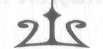
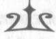
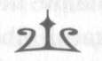
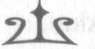
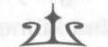
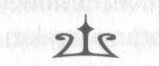
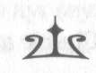

"Möööööööööö!"
İyice yaklaşınca bunun bir inek olduğunu gördüm.
Tamam... daha önce de denizineklerine dair şeyleri, manati-leri falan duymuştum ama bu gerçekten bir inekti ama arka tarafı bir yılan kuyruğu gibiydi. Ön kısmı bir buzağıya aitti; daha bir bebekti, siyah tüyleri, üzgün üzgün bakan kocaman kahverengi gözleri vardı, burnuysa beyazdı. Arka kısmıysa siyah ve kahverengi renklerde, altta ve üstte yüzgeçleri olan bir yılan kuyruğuydu, kocaman bir yılan balığına benziyordu.
"Hey, ufaklık," dedim. "Sen de nereden çıktın?"
Yaratık bana acı acı baktı. "Möööö!"
Ama düşüncelerini anlayamıyordum. Ben sadece at dilini konuşabiliyorum.
Bunun ne olduğunu bilmiyoruz efendim, dedi denizatlarından biri. Çok tuhaf şeyler uyanmakta.
"Evet," dedim fısıltıyla. "Öyle olduğunu duymuştum."
Dalgakıran'ın kapağını kaldırdım ve kılıç elimde gerçek uzunluğuna ulaştı, bronz ağzı karanlıkta parlıyordu.
İnek-yılan birden delirdi, ağlarda debelenmeye başladı, gözleri dehşetten yuvalarından fırlayacak gibiydi. "Dur,"
dedim. "Canını yakmayacağım! Bırak da ağı keseyim."
Ama inek-yılan daha da debelendi ve ağlara daha da dolandı. Tekne yan yatmaya başlayınca denizin dibindeki 111
NymphE
çamur kalkmaya başladı; tekne inek yılanın üzerine ha düştü ha düşecekti. Denizatları paniğe kapılıp kişnemeye, suda deli gibi hareket etmeye başladılar ama tabii bunun olan bitene bir faydası yoktu.
"Tamam, tamam!" dedim. Kılıcı uzağa koydum, hem denizatları hem de inek-yılan korkmayı kessin diye elimden geldiğince sakince konuşmaya başladım. Suyun altında izdi-ham yaratmak mümkün müydü bilmiyordum ama aslında bilmek de istemiyordum. "Her şey yolunda. Kılıç yok.
Gördün mü? Kılıç yok. Sakinleştirici şeyler düşün. Deniz çimleri. Anne inek. Vejetaryenlik."
İnek-yılanın dediklerimi anladığından şüpheliydim ama ses tonum onu etkilemiş gibiydi. Denizatları hâlâ huzursuzdu ama en azından etrafımda hızla dönmeyi kestiler.
Kurtarın onu efendim, diye yalvardılar.
"Evet," dedim. "O kısmı anladım. Düşünüyorum."
Ama inek-yılan (inekti sanırım, öküze benzemiyordu) kılıçtan bu kadar korkarken onu nasıl kurtaracaktım? Sanki daha önce kılıç görmüştü ve ne kadar tehlikeli olduklarını biliyordu.
"Tamam," dedim denizatlarına. "Hepiniz sizlere söyleyeceğim gibi itmelisiniz."
Önce tekneyle işe başladık. Kolay olmadı ama üç beygir gücü olunca bebek inek-yılanın üzerine devrilmeyecek şekilde enkazı kaydırmayı başardık. Sonra ağla uğraşmaya başladım, parça parça çözdüm, esas ağırlıkları ve kancaları düzelttim, inek yılanın toynaklarına takılan düğümleri açtım.
Sonsuza dek sürdü; yani en azından bilgisayarın birbirine dolanan kablolarını çözmeye çalıştığım zamankinden çok daha kötüydü durum. Tüm bu süre boyunca inek-balıkla konuştum, o da mööledi, inledi.
112
NymphE
"Tamam Bessie," dedim. Neden ona bu adı verdiğimi sormayın. Sadece güzel bir inek adına benziyordu. "Akıllı inek. Cici inek."
En sonunda ağ açıldı ve inek-yılan suyun içerisinde fişek gibi fırladı ve keyifle perendeler atmaya başladı.
Denizatları keyifle kişnediler. Teşekkürler efendim!
"Mööö!" diyerek inek-yılan bana burnunu sürttü ve kocaman kahverengi gözleriyle bana baktı.
"Evet," dedim. "Her şey yolunda. Aferin inek. Eh... artık başını belaya sokma."
Aklıma bir şey geldi; ne kadardır su altındaydım ben? En azından bir saat. Argos veya harpyalar gece dışarı çıkma yasağını deldiğimi fark etmeden kulübeme geri dönmeliydim.
Son sürat su yüzeyine çıktım. Kara Korsan anında beni fark edip üzerime doğru dalışa geçti ve yaklaşınca boynuna sarıldım. Beni havaya kaldırdı ve tekrar sahile götürdü.
Başardın mı patron?
"Evet. Bir bebek... bir şeyi kurtardık. Çok vakit aldı.
Neredeyse altında eziliyordum."
İyi işler hep tehlikelidir patron. Benim dertli yelemi de kurtarmıştın, değil mi?
Kabusumu düşünmeden duramıyordum. Annabeth'in cansız bedeni Luke'un kollarındaydı. Bebek canavarları falan kurtarıyordum ama arkadaşımı kurtaramıyordum.
Kara Korsan kulübeme doğru uçarken yemek yenen gazinoya bakmış bulundum. Birini gördüm; sanki birilerin-den gizlenir gibi bir Yunan sütununun arkasına çömelmişti.
Bu Nico'ydu; ama henüz şafak sökmemişti, kahvaltı vakti de değildi. Orada ne işi vardı?
Tereddüde düştüm. En son istediğim şey Nico'nun bana 113
NymphE
yine Efsanebüyüsü oyununu anlatmasıydı. Ama ters giden bir şey vardı, orada çömelmesinden anlayabiliyordum.
"Kara Korsan," dedim "beni buraya indir, olur mu? Şu sütunun arkasına."
Neredeyse bir çuval inciri berbat edecektim.
Nico'nun arkasındaki basamaklardan ilerliyordum. Beni hiç fark etmemişti. Bir sütunun ardındaki köşeden ortalığı gözetliyordu; tüm dikkatini yemek alanına vermişti. Bir buçuk metre arkasındaydım, tam yüksek sesle "Sen ne yapı-
yorsun?" diyecektim ki Kıvırcık'ın da onun yaptığı işin aynısını yaptığını fark ettim: avcıları gözlüyordu.
Sesler geldi; yemek masasındaki iki kız konuşuyordu. Bu kör saatte! Gerçi şafak tanrıçasıysanız durum başka.
Annabeth'in büyülü kepini cebimden çıkarttım ve başıma taktım.
Farklı bir şey hissetmiyordum ama kolumu kaldırınca göremedim; görünmezdim.
Nico'ya doğru süründüm ve gizlice etrafından dolaştım.
Kızları karanlıkta iyi seçemiyordum ama seslerinden tanı-
dım onları: Zoe ve Bianca. Sanki tartışıyorlardı.
"Tedavi edilemez," diyordu Zoe. "En azından hızla olmaz."
"Ama nasıl oldu bu iş?" diye sordu Bianca.
"Aptalca bir eşek şakası," dedi Zoe homurdanarak. "Şu Stoll kardeşler yok mu, Hermes Kulübesi'nden hani? Sentor kanı asit gibidir. Herkes bunu bilir. Artemis Av Turu tişörtü-
nün içine spreyle sıkmışlar kanı."
"Bu felaket!"
"Yaşayacak," dedi Zoe. "Ama arı kovanı gibi delik deşik halde, haftalarca yatakta yatması gerek. Gitmesi mümkün 114
NymphE
değil. Bu iş bana... ve zatıalinize kaldı."
"Ama kehanet," dedi Bianca. "Phoebe gidemezse dört kişi oluruz. Başka birisini seçmeliyiz."
"Vakit yok," dedi Zoe. "Günün ilk ışıklarıyla yola çıkmalı-
yız. Yani hemen. Hem kehanet de bir kişiyi kaybedeceğimizi söylüyordu."
"Yağmursuz topraklarda," dedi Bianca "ama burası, orası olamaz."
"Olabilir," dedi Zoe, gerçi o da buna tam inanmıyordu galiba. "Kampın sınırları büyülü. Hiçbir şey, hatta hava bile izinsiz giremez. Burası yağmursuz toprak olabilir."
"Ama..."
"Bianca, dinle beni." Zoe gergin gibiydi. "Ben... ben ba-zı şeyleri açıklayamam ama içimden bir his diyor ki başka birisini seçme. Çok tehlikeli olabilir. Başlarına Phoebe'nin-kinden de kötü şeyler gelebilir. Kheiron'un bir kampçıyı beşinci kişi seçmesini de istemiyorum. Ve... başka bir avcı da kaybetmek istemiyorum."
Bianca bir an sustu. "Thalia'ya kabusunun kalanını anlatmalısın."
"Hayır. Bir yararı olmaz."
"Ama General ile ilgili şüphelerin doğruysa..."
"Zatıaliniz bana bu konuda tek kelime etmemeye yemin etmişti," dedi Zoe. Gerçekten müthiş bir acı çekiyor gibiydi.
"Yakında öğreniriz. Şimdi gel. Şafak sökmek üzere."
Nico gizlice yollarından çekildi. Benden de hızlıydı bu çocuk.
Tam kızlar koşarak basamaklardan inerlerken Zoe neredeyse bana çarpıyordu. Olduğu yerde dondu, gözlerini kıstı.
Eli yayına gitti ama sonra Bianca "Büyük Ev'in ışıkları yandı.
Acele et!" dedi.
115
NymphE
Ve Zoe gazinodan çıkan Bianca'yı izledi.
Nico'nun ne düşündüğünü tahmin edebiliyordum. Derin bir nefes aldı; tam kız kardeşinin peşinden koşacaktı ki görünmezlik kepini çıkarttım ve "Dur," dedim.
Az kalsın beni bulmak için dönerken buz tutmuş merdivenlerden kayıp düşecekti. "Sen nereden çıktın?"
"Hep buradaydım. Görünmezdim."
Görünmez sözcüğünü söyledi sessizce. "Vay be. Süpermiş."
"Zoe ve kız kardeşinin burada olduğunu nereden biliyordun?"
Kızardı, bozardı. "Hermes Kulübesi'nin yanından geçtiklerini duydum. Ben... ben kampta iyi uyuyamıyorum. Ayak seslerini ve fısıldaştıklarını duydum. Sonra da onları izledim."
"Şimdi de bu görevde onlarla gitmeyi düşünüyorsun,"
diye tahminimi söyledim.
"Bunu nereden bildin?"
"Çünkü benim kız kardeşim olsa ben de aynı şeyi düşü-
nürdüm. Ama olmaz."
Meydan okuyan bir tavır takındı. "Çok küçüğüm diye mi?"
"Çünkü sana izin vermezler. Seni yakalayıp geri buraya yollarlar. Ve... evet, çok küçüksün diye. Mantikoru hatırladın mı? Onun gibilerinden sürüyle var. Daha tehlikelileri hem de. Kahramanlardan bazıları ölecek."
Omuzları çöktü. Bir oraya bir buraya verdi ağırlığını.
"Belki de haklısın. Ama benim yerime sen gidebilirsin."
"Pardon?"
"Görünmez olabilirsin. Gidebilirsin!"
116
NymphE
"Avcılar erkekleri sevmiyor," diyerek durumu hatırlattım. "Eğer bir farkına varırlarsa..."
"İzin verme. Onları görünmez olarak izle. Kız kardeşimi kolla! Yapmalısın. Lütfen?"
"Nico..."
"Zaten gitmeyi planlıyorsun, öyle değil mi?"
Hayır demek isterdim. Ama doğruca gözlerime dikti gözlerini, nedense ona yalan söyleyemezdim.
"Evet," dedim. "Annabeth'i bulmalıyım. İstemeseler de onlara yardım etmek zorundayım."
"Kimseye söylemem," dedi. "Ama kız kardeşimi koruyacağına söz vermelisin."
"Ben... bu büyük bir yemin olur Nico, hele böyle bir görevde. Hem yanında Zoe, Kıvırcık ve Thalia var..."
"Söz ver," diye ısrar etti.
"Elimden gelenin en iyisini yapacağım, söz veriyorum."
"O halde yola çık," dedi. "İyi şanslar!"
Çılgınca bir durumdu bu. Hazır değildim. Üstümde kep, kılıç ve o anki kıyafetlerim dışında bir şey yoktu, aslında bu sabah Manhattan'a yola çıkmam gerekiyordu. "Kheiron'a söyle..."
"Bir şeyler uyduruveririm," dedi Nico ve hınzırca gülümsedi. "Bu işte iyiyim. Haydi git!"
Annabeth'in kepini kafama takıp koştum. Güneş yükseldiğinde görünmez olmuştum. Tam kamp minibüsü çiftlik yolundan doğru gidip kaybolurken Melez Tepesi'nin başına varmıştım. Muhtemelen Argos görev grubunu şehre götürü-
yordu. Ondan sonrasında kendi başlarına gideceklerdi.
Biraz suçluluk vardı içimde, aptallık ediyormuşum gibi geliyordu ayrıca. Onlara nasıl yetişecektim ki? Koşacak mıydım?
Sonra büyük kanatların çırpma sesini duydum. Kara 117
NymphE
Korsan yanıma indi. Buzların arasından boy vermiş bir avuç çimeni hiçbir şey yokmuşçasına ağzına alıp çiğnemeye baş-
ladı.
Patron, doğru tahmin ettiysem eğer, sana bir kaçış atı lazım. İlgilenir misin?
Boğazımda bir minnet düğümü büyüdü sanki, bir süre konuşamadım ama yine de "Evet, haydi uçalım," demeyi becerdim.
118
NymphE

BÖLÜM DOKUZ
NASIL ZOMBİ YETİŞTİRİLECEĞİNİ
ÖĞRENİYORUM
Güpegündüz bir pegasusla uçmanın zorluklarından birisi, dikkat etmezseniz Long Island otobanında ciddi bir trafik kazasına yol açabilme ihtimalinizin olması. Bu nedenle Kara Korsan'ı bulutların arasından sürmem gerekü, neyse ki kış
olduğundan alçaktan ilerliyordu bulutlar. Bir o yana bir bu yana uçuyor, Melez Kampı minibüsünü görüş alanımızda tutmaya çalışıyorduk. Zeminde hava soğuktu ama gökte buz kesiyordu, sulusepken yağan kar tenimi yakıyordu.
Keşke yanıma kamp dükkanında satılan Melez Kampı'nın ısıtıcılı turuncu iç çamaşırlarından alsaymışım; ama Phoebe ve sentor kanlı tişört olayından sonra, artık oranın ürünleri de pek güven verici gelmiyordu.
İki kere minibüsü gözden kaçırdık ama önce Manhattan'a gideceklerinden emindim, bu yüzden izlerini tekrar bulmak zor olmadı.
Tatil yüzünden trafik bayağı sıkışıktı. Şehre girmeleri gün ortasını buldu. Kara Korsan'ı Chrysler Binası'nın tepesine park ettim ve otobüs terminaline gideceğini düşünerek beyaz kamp minibüsünü izledim ama durmayıp yanından geçti.
"Argos onları nereye götürüyor?" diye sordum fısıltıyla.
Ama Argos kullanmıyor ki arabayı, patron, dedi Kara 119
NymphE
Korsan. Kız kullanıyor.
"Hangi kız?"
Avcı kız. Şu saçında gümüşten taç olan.
"Zoe mi?"
Hah, o. Hey, baksana! Şurada bir çörek dükkanı var. Yolluk alsak mı?
Kara Korsan'a çörekçiye uçan bir at girdiğini görürlerse polislerin kalp krizi geçirebileceğini söyledim ama bir türlü anlamıyordu. O sırada minibüs de Lincoln Tüneli'nden içeri giriyordu. Zoe'nin araba süreceği hiç aklıma gelmemişti.
Yani, on altısından gün almış gibi gözükmüyordu. Gerçi ölümsüzdü. Acaba bir New York ehliyeti var mıydı? Varsa acaba doğum tarihi kaç yazıyordu?
"Tamam," dedim. "Haydi, peşlerine düşelim."
Tam Chrysler Binası'ndan atlayıp uçacaktık ki Kara Korsan kişneyerek tehlike sinyali verdi. Öyle bir şahlandı ki neredeyse düşecektim. Dahası yılan gibi bir şey bacağıma dolanıyordu. Kılıcıma uzandım ama eğilip bakınca bir yılan göremedim. Yılan değil, daldı bunlar; hem de asma dalları.
Binanın taşlarının arasından boy vermişlerdi. Kara Korsan'ın bacaklarına dolanmışlardı, beni de bileklerimden öyle bir çekiyorlardı ki bir yere kımıldayamıyorduk.
"Bir yere mi gidiyorsun?" diye sordu Bay D.
Binaya yaslanmıştı ama ayakları boşluktaydı, havada süzülüyordu, leopar desenli eşofmanıyla siyah saçları rüzgarla uçuşuyordu.
Tanrı alarmı! diye bağırdı Kara Korsan. Bu o şarapçı ahbap!
Bay D. öfkeyle iç geçirdi. "Bundan sonra hangi kişi veya at bana 'şarapçı' derse, kendisini bir şişe Merlot şarabının dibinde bulacak!"
120
NymphE
"Bay D." Bacaklarımı asma dalları sararken sakin bir sesle konuşmaya çalıştım. "Ne istemiştiniz?"
"Ah, ben mi? Ne mi istiyorum? Belki de kampın ölümsüz, mutlak güce sahip müdürü izinsiz çıktığımı fark etmez, diye mi düşündün?"
"Eh... olabilir."
"Seni şu binadan aşağı, uçan atın olmadan atayım da gör.
Bakalım aşağı uçarken de bu kadar kahramanca çıkacak mı sesin?"
Yumruklarımı sıktım. Çenemi kapamalıydım, biliyordum ama Bay D. ya beni öldürecekti, ya da beni sırtına alıp kampa götürecekti ki o zaman da utançtan ölecektim ve bu iki olasılık da beni öldürüyordu. "Neden bu kadar nefret edi-yorsunuz benden? Size ne yaptım ki ben?"
Gözlerinde mor alevler parıldadı. "Sen bir kahramansın evladım. Başka sebebe ne gerek var?"
"Bu göreve çıkmam şart! Arkadaşlarıma yardım etmeliyim. Siz bunu asla anlayamazsınız!"
Patron, eee, şey, dedi Kara Korsan endişeyle. Dikkat edersen yerden üç yüz metre yukarıda, asma dallarına asılı duruyoruz; belki biraz daha kibarca konuşmak istersin.
Asma dalları beni daha da sıkıca sardı. Altımızdaki beyaz minibüs ise uzaklaştıkça uzaklaşıyordu. Yakında gözden kaybolacaktı.
"Sana hiç Ariadne'dan bahsettim mi?" diye sordu Bay D.
"Girit'in genç ve güzel prensesi? O da severdi arkadaşlarına yardım etmeyi. İşin aslı, senin gibi Poseidon'un oğlu olan, Theseus adındaki genç bir kahramana yardım etmişti vaktiyle. Labirent'ten çıkabilmesi için kahramana büyülü iplerden bir yumak vermişti. Theseus onu nasıl ödüllen-dirdi, bilir misin?"
121
NymphE
Vermek istediğim yanıt "Hiç umurumda değil!" olsa da, bu yanıtın Bay D.'nin öyküsünü daha çabuk bitirmesine yaramayacağını düşündüm.
"Evlendiler," dedim. "Sonsuza dek mutlu yaşadılar.
Son."
Bay D. dudak bükerek güldü. "Pek öyle olmamış. Theseus, seninle evleneceğim demiş. Onu gemisine almış ve Atina'ya doğru yola çıkmış. Sonra, Nakşa denen bir adaya giden yolun yarısında... siz ölümlüler ne diyordunuz... onu başından atmış. Onu orada buldum. Yapayalnızdı. Kalbi kırılmıştı. Hüngür hüngür ağlıyordu. Her şeyden vazgeç-
mişti, bildiği her şeyi geride bırakmıştı. Niye? Sonunda eski bir sandalet gibi kendisini bir köşeye atacak olan havalı, genç bir kahramana yardım etmek için."
"Bu doğru bir hareket değil," dedim. "Ama bu dediğiniz binlerce yıl önceymiş. Bunun benimle ne alakası var?"
Bay D. bana buz gibi bakışlar fırlattı. "Ariadne'ye aşık oldum evladım. Kırık kalbini tamir ettim. O ölünce de onu Olimpos'ta ölümsüz eşim yaptım. Şu an bile beni bekler.
Sizin şu saçma sapan kampınızda bir yüzyıl sürecek olan cehennem azabı cezam biter bitmez de yanına dönece-
ğim."
Ona bakakaldım. "Siz... evli misiniz? Ama bir orman nem-finin peşine düştüğünüz için başınız derde girdi diye biliyordum..."
"Asıl demek istediğim, siz kahramanlar hiç değişmezsi-niz. Biz tanrıları kibirle suçlarsınız. Ama asıl kendinize bakmalısınız. Ne istiyorsanız alır, kimi isterseniz kullanır, sonra da çevrenizdeki herkese ihanet edersiniz. O yüzden kusura bakma, hiç sevmem kahramanları. Nankör benciller sürüsüdür onlar. Ariadne'ye sor, öyle mi, değil mi? Ya da 122 NymphE
Medea'ya sor. Hatta Gecegölgesi Zoe'ye sor."
"Ne demek yani? Zoe'ye sor?"
Elini, aman boş ver dercesine salladı Dionisos. "Git de salak arkadaşlarının peşine düş."
Asma dalları bacaklarımdan çekildi.
Olanlara inanamayarak gözlerimi kırpıştırdım. "Siz... siz gitmeme izin mi veriyorsunuz? Öylece gidecek miyim?"
"Kehanet en az iki kişinin öleceğini söylüyor. Şansım yaver giderse, onlardan biri sen olursun. Ama sözlerimi dikkate al Poseidon'un oğlu: İster öl, ister yaşa, diğer kahra-manlardan farklı çıkmayacaksın."
Ardından parmaklarını şıklattı. Görüntüsü bir kağıt olup kıvrıldı. Bir pof sesi çıktı ve gözden kayboldu; geride hafif bir üzüm kokusu kaldı, o da rüzgarla uçup gitti.
Ucuz atlattık, dedi Kara Korsan.
Doğru anlamında başımı salladım; gerçi Bay D. beni kampa geri sürüklese daha az endişelenecektim. Beni bırakması, gerçekten de bu görevde hezimete uğrayacağımıza inandığını gösteriyordu.
"Gel bakalım Kara Korsan," dedim, keyfim yerindeymiş
gibi yapıyordum. "Sana New Jersey'den alırız çöreği."
Olaylar öyle bir gelişti ki Kara Korsan'a New Jersey'den de çörek alamadım. Zoe, deli gibi güneye sürdü minibüsü, en sonunda dinlenmek için arabayı kenara çekip kontağı kapattığında Maryland'e varmıştık. Kara Korsan inmek yerine neredeyse düşecekti, o denli yorulmuştu.
Birazdan toparlanırım patron, dedi nefes nefese. Sadece...
sadece biraz soluklanmalıyım. "Burada kal," dedim ona.
"Ben ortalığı kolaçan edeceğim."
'Burada kal' ha, tamam, bunu yapabilirim. Oldu bil.
123
NymphE
Görünmezlik kepini taktım ve bir süpermarkete girdim.
Ses çıkarmadan, kimseye fark ettirmeden yürümeye çalış-
mak çok zordu. Sürekli "kendime insanlar seni göremez,"
diye hatırlatmak zorundaydım. İnsanlar bana çarpmasın diye sürekli yollarından çekilmek zorunda olmak da zordu.
İçeri girer, biraz ısınır, belki bir fincan sıcak çikolata falan içerim diye düşünüyordum. Cebimde pek bozukluk yoktu.
Tezgaha bende olanı bıraksam yeterdi. Acaba alınca fincan da görünmez mi olacak, yoksa havada bir fincan sıcak çikolata mı olacak diye düşünürken, dükkandan fırlayan Zoe, Thalia, Bianca ve Kıvırcık yüzünden tüm planım suya düştü.
"Kıvırcık, emin misin?" diyordu Thalia.
"Eh... oldukça eminim. Yüzde doksan dokuz diyelim.
Tamam, yüzde seksen beş olsun."
"Ve bu işi meşe palamutlarıyla yaptın öyle mi?" diye sordu Bianca, inanmıyor gibiydi.
Kıvırcık gücenmişti galiba. "Bu nesillerdir saygı duyulan bir iz sürme büyüsüdür. Yani, doğru yaptığıma bayağı emin
nım.
"Başkent Washington buradan yüz kilometre uzakta,"
dedi Bianca. "Nico'yla beraber..." Kaşlarını çattı. "Eskiden orada yaşıyorduk. Bu... çok tuhaf. Unutmuşum."
"Bu katiyen hoşuma gitmedi," dedi Zoe. "Doğruca batıya gitmeliyiz. Kehanet batı diyor."
"Of, senin iz sürme hünerlerin sanki daha iyi!" diye homurdandı Thalia.
Zoe ona doğru bir adım attı. "Demek marifetlerimi hor görüyorsun ha, seni sefil mahluk? Bir avcı olmak ne demek, ne anlarsın sen!
"Ne? Sefil mahluk mu? Sen bana mı sefil mahluk dedin?
Sefil mahluk da ne demek yahu?"
124 NymphE
"Off, siz ikiniz..." dedi Kıvırcık kaygıyla. "Haydi ama. Yine başlamayın!"
"Kıvırcık haklı," dedi Bianca. "En iyi olasılık başkent Washington."
Zoe ikna olmuş gibi değildi ama istemeden de olsa kabul ettiğini gösterecek şekilde başını salladı. "Pekala. Haydi, gidelim."
"Sen araba süreceksin diye hapse tıkılacağız," diye homurdandı bu kez Thalia. "Ben senden daha büyük göste-riyorum."
"Belki öyle," diye çıkıştı Zoe. "Ama ben otomobiller icat olduğundan beri araba kullanıyorum. Haydi, gidelim."
Kara Korsan'la beraber minibüsün peşinde güneye giderken, Zoe'nin yalan söyleyip söylemediğini düşündüm.
Arabalar ne zaman icat edilmişti bilmiyordum ama sanırım tarih öncesi çağlarda olmalıydı; insanların siyah beyaz televizyon izleyip dinozor avladığı dönemler yani.
Bu Zoe kaç yaşındaydı? Ve Bay D. neden bahsediyordu?
Zoe'nin kahramanlarla başından geçen kötü şey neydi?
Washington'a yaklaşırken Kara Korsan yavaşlamaya ve irtifa kaybetmeye başladı. Zar zor nefes alıyordu.
"Sen iyi misin?" diye sordum.
Fevkaladeyim patron. Bir... bir ordu gelse tek başıma hal-lederim.
"Çok iyi değilsin sanki." Birden pişmanlık kapladı içimi çünkü pegasusu yarım gün boyunca hiç durmadan uçurt-muş, otoban trafiğine uymaya zorlamıştım. Uçan bir at için bile zor olmalıydı bu.
Beni dert etme patron! Ben çetin cevizimdir.
Haklı olduğunu düşündüm ama Kara Korsan şikayet 125 NymphE
etmeye fırsat bulamadan yere çakılacaktı bu kez ve bunu da istemiyordum.
Neyse ki minibüs yavaşlamaya başladı. Washington'un merkezindeki Potomac Irmağı'nı geçti. Hava devriyeleri ve füzeler geldi aklıma. Bu hava savunma sistemleri nasıl çalı-
şıyordu hiçbir fikrim yoktu; pegasuslar bildiğimiz askeri radarlarda belirir miydi, onu da bilmiyordum ama bir füzeyle yere düşerek öğrenmek de istemiyordum.
"Beni buraya indir," dedim Kara Korsan'a. "Bu kadarı yeter."
Kara Korsan o kadar yorgundu ki ağzını açmadı. Beni Washington Anıtı'nın önüne, çimlere indirdi.
Minibüs yalnızca birkaç sokak ötedeydi. Zoe kaldırıma çekmişti arabayı.
Kara Korsan'a baktım. "Kampa geri dönmeni istiyorum.
Biraz dinlen. OÜan. Beni dert etme."
Kara Korsan şüpheyle başını kaldırdı. Emin misin patron?
"Yeterince şey yaptın," dedim. "Beni dert etme. Tonlarca teşekkürler."
Tonlarca saman daha iyi olurdu, dedi Kara Korsan, dalgın bir ifadeyle. Hah, bu güzel fikir işte. Tamam, ama yine de dikkat et patron. İçimden bir ses bunların buraya benim kadar dost canlısı ve yakışıklı birileri ile buluşmaya gelmediğini söy-lüyor.
Dikkatli olacağıma söz verdim. Sonra Kara Korsan havalandı, bulutlarda kaybolmadan önce anıtın etrafında iki tur attı.
Beyaz minibüse baktım. Herkes dışarı çıkmaya başla-mıştı. Kıvırcık, büyük alışveriş merkezinde sıralanmış büyük binalardan birisine işaret edince, dördü birden soğuk rüz-126 NymphE
gara ağır adımlarla yürümeye başladılar.
Peşlerine düştüm. Ama sonra olduğum yerde donakaldım.
Bir sokak ötede siyah bir otomobilin kapısı açıldı. Kır saç-
ları asker gibi kesilmiş bir adam dışarı çıktı. Siyah güneş
gözlükleri ve siyah bir palto giymişti. Şimdi, başkent Washington'da olduğumuz için bu size normal gelebilir; her yerde böyle adamların olmasını bekleyebilirsiniz. Ama birden kafama dank etti; aynı arabayı otobanda güneye giderken birkaç kez görmüştüm. Demek ki minibüsü takip ediyordu.
Adam cebinden telefonunu çıkartıp bir şeyler söyledi.
Sonra etrafına bakındı, sanki bir tehlike var mı, her şey yolunda mı diye bakıyordu. Sonra da alışveriş merkezine, arkadaşlarıma doğru yürümeye başladı.
İşin en kötüsü şuydu: bana doğru dönünce o yüzü tanı-
dım. Bu Westover Kışlası'ndaki mantikor, yani Dr. Diken'di.
Görünmezlik kepimi takarak, belli bir mesafeden Diken'i takip etmeye başladım. Kalbim küt küt atıyordu. Eğer Diken uçurumdan düşmekten kurtulmuşsa, Annabeth de mutlaka kurtulmuş olmalıydı. Kabuslarım gerçekti. O hayattaydı ve esir tutuluyordu.
Diken arkadaşlarıma olan uzaklığını koruyor, görünmemeye çalışıyordu.
En sonunda Kıvırcık kocaman bir binanın önünde durdu.
Binada ULUSAL HAVACILIK VE UZAY MÜZESİ yazıyordu.
Burası Smithsonian Müzesi'ydi! Milyon sene önce buraya annemle gelmiştik ama o sıralar her şey daha büyük gözük-müştü gözüme.
Thalia kapıyı kontrol etti. Açıktı ama içeri giren çok kişi yoktu. Hem hava soğuk olduğu hem de okullar kapalı olduğu 127
NymphE
için herhalde. Sonra görünmemeye dikkat ederek içeri girdi-ler.
Dr. Diken bir an duraksadı. Neden bilmiyorum ama müzeye girmedi. Dönüp alışveriş merkezine yöneldi. Ben de o an bir karar verip onun peşinden gittim.
Diken sokağı geçti ve Doğa Tarihi Müzesi'nin basamaklarını çıkmaya başladı. Kapıda kocaman bir levha vardı. İlk başta üstünde GÜZEL BİR ETKİNLİK İÇİN KAPALI yazıyor sandım. Sonra "ÖZEL"i, "GÜZEL" diye okuduğumu fark ettim.
İçeride Dr. Diken'i izledim, mastudon ve dinozor iskelet-leriyle dolu kocaman bir salondan geçti. İlerideki bir çift kapalı kapının ardından sesler geliyordu. Dışarıda iki muhafız bekliyordu. Kapıları Diken için açtılar, kapıları kapatmadan önce içeri girmek için tüm gücümle koşmak zorunda kaldım.
Kapıların ardında gördüklerim öyle dehşet vericiydi ki az kalsın çığlığı basacaktım; muhtemelen bu da ecelimi erken getirecekti.
İkinci katı oluşturan bir balkonla sarmalanmış, kocaman, yuvarlak bir odadaydım. Balkonda en azından bir düzine ölümlü muhafız ve iki tane de canavar vardı; bunlar ayak yerine çifte yılan gövdesi olan sürüngen kadınlardı. Onları daha önce de görmüştüm. Annabeth onlara İskitli Drakonlar diyordu.
Ama en kötüsü bunlar değildi. Yılan kadınların (yemin ederim sanki doğruca bana bakıyorlardı) arasında eski düş-
manım Luke duruyordu. Gerçekten felaket bir haldeydi.
Kağıt gibi bembeyazdı teni ve sarı saçlarına ak düşmüştü; sanki birkaç ay içerisinde on sene yaşlanmıştı. Gözlerindeki o hiddetli parıltı yerli yerindeydi, hatta yüzünde bir ejderhanın tırmalamasıyla açılan yara izi de öyleydi ama yara izi 12 NymphE
8
şimdi iğrenç bir kızıl renkteydi; sanki yara yeniden kana-maya başlamış gibi gözüküyordu.
Onun yanında, gölgelerin içerisinde bir başka adam oturuyordu. Tek görebildiğim, sandalyesinin altın işli kol-
çaklarını kavramış ellerinin eklemlerinin beyazlığıydı; bu sandalyeye taht demek mümkün tabii.
"Eee?" diye sordu sandalyedeki adam. Sesi kabuslarımdaki sesin tıpatıp aynısıydı; Kronos'unki kadar tüyler ürperticisi olmasa da daha derin, daha kuvvetli bir sesti, sanki toprağın kendisi konuşmaya başlamış gibi. Bağırmasa da dört bir yanı kaplıyordu sesi.
Dr. Diken güneş gözlüklerini çıkarttı. Çift renkli, biri mavi, biri kahverengi gözleri heyecanla parlıyordu. Sert bir şekilde adamın önünde eğildi, sonra o garip Fransız aksanıyla konuştu. "Buradalar Jeneral."
"Bunu biliyorum, seni aptal!" diye gürledi adam. "Ama neredeler?"
"Roket müzesinde."
"Havacılık ve Uzay Müzesi," diyerek, sinirli bir şekilde adamın dediklerini düzeltti Luke.
Dr. Diken gözlerinden nefret saçarak Luke'a baktı. "Siz nasıl derseniz, efendim."
Diken, Luke'a "efendim" demektense, oklarını atıp Luke'u delik deşik etmek istiyormuş hissine kapıldım.
"Kaç kişiler?" diye sordu Luke.
Diken duymazdan geldi.
"Kaç kişiler?" diye üsteledi General.
"Dört kişiler, Jeneral," dedi Diken. "Satir, Kıvırzık Salıdibi.
Ve siyah saçları dimdik, diken gibi olan, nasıl diyorsunuz, punk kıyafetli, korkunç kalkanlı kız."
"Thalia," dedi Luke.
129 NymphE
"Ve diğer iki kız; Avzılar. Biri gümüş bir taç takıyor."
"Onu tanıyorum," diye kükredi General.
Odadaki herkes korkuyla irkildi.
"Bırakın da onları halledeyim," dedi Luke, General'e.
"Fazlasıyla adamımız..."
"Sabret," dedi General. "Elleri dolu şimdi. Onlara ufak bir oyun arkadaşı göndereceğim birazdan."
"Ama..."
"Seni riske atamayız evladım."
"Evet, evladım," dedi Diken, zalim bir gülümsemeyle.
"Sen riske atılmayazak kadar narinsin. Bırakın da bu işi ben halledeyim."
"Hayır." General sandalyesinden kalktı ve onu ilk kez görmüş oldum.
Uzun boylu ve kaslıydı, teni biraz koyuydu, siyah saçları arkaya yapıştırılmıştı. Çok pahalı, kahverengi, ipek bir takım elbise giymişti, hani Wall Street borsacılarının giydiği türden. Ama bu herifin bir borsacı olmasına imkan yoktu.
Yabani bir suratı, geniş omuzları, bir bayrak direğini ortadan ikiye bölebilecek kadar güçlü elleri vardı. Gözleri taş
gibiydi. Sanki canlı bir heykele bakıyordum. Kıpırdaması bile şaşırtıyordu insanı.
"Beni çoktan yüzüstü bıraktın Diken," dedi.
"Ama Jeneral..."
"Bahane uydurma!"
Diken ürktü. Askeri akademide, siyah üniforması içinde onu ilk gördüğümde korkunç biri gibi gelmişti bana. Ama şimdi General'in karşısında dururken... Diken salak bir asker özentisine benziyordu. General ise hakikiydi. Bir ünifor-maya ihtiyacı yoktu. Doğuştan komutandı.
"Seni bu yetersizliğinden ötürü Tartarus'un çukurlarına 130 NymphE
atmalıyım," dedi General. "Üç büyük tanrının çocuklarından birini kaçırman için yolladım seni, sen de bana cılız bir Athena kızı getirdin."
"Ama intikamımı alazağıma söz vermiştiniz!" diye itiraz etti Diken. "Emrimde bir ordu olazaktı!"
"Tanrı Kronos'un komutanı benim," dedi General. "Ve bana sonuç getiren vekilleri seçerim! Sağ olsun, Luke sayesinde planımızı suya düşmekten kurtardık. Şimdi, sana başka bir aşağılık iş bulana dek, yıkıl karşımdan Diken!"
Diken'in yüzü öfkeden mosmor oldu. Şimdi ağzından köpükler ya da her yana dikenler saçacak diye düşündüm ama yalnızca acemice eğilip selam verdi ve odadan çıktı.
"Şimdi, evladım." General, Luke'a döndü. "İlk yapmamız gereken iş, melez Thalia'yı diğerlerinden ayırmak. Sonra aradığımız canavar ona gelecek."
"Avcılardan kurtulmak zor oldu," dedi Luke. "Gecegölgesi Zoe..."
"Onun adını anma!"
Luke korkuyla yutkundu. "Ö-özür dilerim General.
Be-ben sadece..."
General elini şöyle bir savurup onu susturdu. "Gel sana avcıları nasıl avlayacağımızı göstereyim evladım."
Zemindeki muhafızlardan birine işaret etti General. "Diş
sizde mi?"
Adam elinde seramik bir çömlekle öne seğirtti. "Evet, General!"
"Ekin onları," dedi.
Odanın ortasında, sanırım bir dinozor sergisinin olması gereken yerde, kocaman bir toprak yığını vardı. Muhafızın çömlekten beyaz bir diş çıkarıp toprağın içine itelemesini endişeyle izledim. Üstünü düzleştirirken General de soğuk 131
NymphE
şekilde gülümsüyordu.
Muhafız topraktan geri adım attı ve ellerini ovuşturdu.
"Hazırız General!"
"Mükemmel! Siz sulayın, biz de avlarının kokusunu almalarını sağlayalım."
Muhafız, üstünde papatya resimleri olan teneke bir süz-geçli kova aldı eline; biraz tuhaftı durum çünkü döktüğü şey su değildi. Koyu renkli kırmızı bir sıvıydı ve bence meyve kokteyli değildi bu.
Toprak köpürmeye başladı.
"Yakında," dedi General "göstereceğim sana Luke, öyle askerler vereceğim ki sana, o ufak teknedeki ordun solda sıfır kalacak."
Luke yumruklarını sıktı. "Ordumu eğitmek için bir yıl harcadım! Prenses Andromeda dağa vardığında, en iyi..."
"Hıh!" dedi General. "Ordun Lord Kronos için iyi bir şeref kıtası olacak. Elbette senin de oynayacağın bir rol var..."
General bunu söyleyince Luke'un beti benzi iyice attı.
"...ama benim komutamda Tanrı Kronos'un güçleri yüz kat artacak. Hiçbir güç bizi durduramayacak. İşte, görün mükemmel ölüm makinelerimi!"
Toprak patladı. Son derece endişelenerek geriye adım attım.
Bir diş ekilmiş her noktadan, toprağın içinden birer yaratık çıkmaya çalışıyordu. İlki şöyle inledi:
"Miyav?"
Bu bir yavru kediydi. Üstünde bir kaplanınkine benzer turuncu desenler olan tekir bir kedi. Sonra bir tanesi daha, sonra bir tane daha... Derken on iki tane oldular, toprağın üstünde yuvarlanmaya, oyunlar oynamaya başladılar.
132 NymphE
Herkes hayretle onlara bakakaldı. General kükredi: "Bu ne? Şirin, kucaklanası kediler mi? O dişleri nereden buldunuz siz?"
Dişi getiren muhafız korkuyla sindi kaldı. "Sergiden efendim! Tam dediğiniz gibi. Kılıç-dişli kaplan..."
"Hayır, seni salak! Tyrannosaurus dedim ben size!
Hemen toplayın şu... şu lanet olasıca tüylü hayvanları ve dışarı atın. Ve bir daha da yüzünüzü görmeyeyim."
Dehşete kapılmış muhafız elindeki süzgeçli kovayı düşürdü. Kedicikleri kaptığı gibi odadan tüydü.
"Sen!" diyerek General başka bir muhafıza işaret etti.
"Bana hemen doğru dişleri bul! ŞİMDİ!"
Yeni muhafız emri yerine getirmek için koşarak çıktı.
"Embesiller," diye mırıldandı General.
"İşte bu yüzden ben ölümlü kullanmıyorum," dedi Luke.
"Güven olmuyor onlara."
"Zayıf iradeliler, kolay satıyorlar kendilerini ve şiddete meyilliler," dedi General. "Onlara bayılıyorum."
Bir dakika sonra muhafız elinde kocaman, sivri dişlerle hızla odaya daldı.
"Mükemmel," dedi General. Balkon korkuluğuna çıktı ve altı metre aşağıya atladı.
Düşünce, deri ayakkabılarının altındaki mermer zemin çatır çatır kırıldı. Doğruldu, şöyle bir silkindi, omuzlarını ovaladı. "Lanet olsun, omzum kötü tutulmuş."
"Sıcak kompres ister misiniz efendim?" diye sordu muhafızlardan birisi. "Biraz daha Aspirin getireyim mi?"
"Hayır! Geçer şimdi." General ipek takım elbisesinden tozları silkeledi, sonra dişi kaptı. "Bu işi ben yapacağım."
Dişlerden birini aldı ve gülümsedi. "Dinozor dişiymiş...
haha! Bu aptal ölümlüler ellerine ejderha dişi geçse bile 133
NymphE
anlamıyor. Ve herhangi bir ejderha dişi değil bu. İhtiyar Sybaris'in ta kendisinin dişi! Bu işimizi gayet güzel görecektir."
On iki dişin on ikisini de toprağa gömdü. Sonra kovayı aldı. Toprağı kırmızı sıvıyla suladı, kovayı bir kenara attı ve kollarını açtı. "Kalkın!"
Toprak titredi. Zeminden tek bir iskelet kolu fırladı ve avcunu kapattı.
General balkona baktı. "Çabuk! Koku sizde mi?"
"Evet, efendimisss," dedi yılan kadınlardan birisi.
Avcıların giydiği türden gümüş bir kumaş parçası çıkardı.
"Mükemmel," dedi General. "Savaşçılarım kokuyu bir aldı mı, hiç durmadan sahibini takip edecekler. Hiçbir şey onları durduramaz, ne bir melez silahı ne de bir avcı silahı.
Avcıları ve müttefiklerini lime lime edecekler. Buraya fırlat!"
Bunu der demez yerden iskeletler fışkırdı. On iki taneydi-ler, General'in ektiği her bir diş için bir tane. Bunlar Cadılar Bayramı'ndaki veya uyduruk filmlerdeki iskeletlere benzemiyordu. Yavaş yavaş ete bürünüyorlar, insan oluyorlardı.
Ama soluk gri tenleri, sarı gözleriyle, modern giyimli insanlardı; üstlerinde de gri atletler, kamuflaj pantolonları ve askeri postallar vardı. Yakından bakmadığınız sürece insan olduklarına inanabilirdiniz ama etleri saydamdı ve kemikleri alttan sanki röntgen ışını vurmuş gibi parlıyordu.
İçlerinden biri doğruca bana baktı, soğuk bir ifadeyle beni tarttı. Hiçbir görünmezlik kepinin onu aldatamayaca-
ğını anladım.
Yılan kadının attığı eşarp General'in eline doğru yavaş
yavaş inmeye başladı. Eşarbı savaşçılara verir vermez, onları yok edene dek Zoe'yi ve diğerlerini avlayacaklarını 134
NymphE
biliyordum.
Düşünecek vaktim yoktu. Koştum, tüm gücümle savaşçı-
ların üstüne zıpladım ve eşarbı havada yakaladım.
"Bu ne?" diye kükredi General.
Bir iskelet savaşçının ayaklarının dibine düştüm, bana tısladı.
"Biri gizlice girmiş," dedi General hiddetten köpürerek.
"Karanlığa gizlenmiş birisi. Kapıları mühürleyin!"
"Bu Percy Jackson!" diye bağırdı Luke. "Başkası olamaz!"
Çıkışa doğru son sürat koşturdum ama bir yırtılma sesi duyunca, iskelet savaşçının ceketimin kolundan bir parça kopardığını anladım. Göz ucuyla arkaya bakınca kumaşı burnuna götürdüğünü, kokladığını ve arkadaşlarına kumaşı uzattığını gördüm. Çığlık atmak istiyordum ama yapamıyordum. Tam muhafızlar kapatırken kapıların arasından geçtim ve kapılar arkamdan mühürlendi.
Sonra koştum.
135
NymphE

BÖLÜM ON
BİRKAÇ ROKETÇİK KIRIYORUM
Alışveriş merkezinde topuklarım popoma değerek koş-
maya başladım, arkama bakmaya cesaret bile edemiyordum.
Doğruca Havacılık ve Uzay Müzesi'ne daldım; görünmezlik kepimi kabul salonunu geçtikten sonra çıkarttım.
Müzenin esas bölümü, tavanda roketlerin ve uçakların asılı olduğu kocaman bir odaydı. Tavana kadar üç sıra balkon sarıyordu içeriyi, böylece sergiye farklı açılardan ve yüksekliklerden bakabiliyordunuz. Mekan çok kalabalık değildi, yalnızca birkaç aile ve muhtemelen okul gezisine gelmiş çocuklardan oluşan birkaç tur grubu vardı. Hepsine buradan çıkın diye bağırmak geçti içimden ama böyle yapsam herhalde tek başarabileceğim tutuklanmak olurdu.
Thalia'yı, Kıvırcık'ı ve avcıları bulmalıydım. İskelet ahbap-lar her an basabilirdi müzeyi; rehberli geziyle yetineceklerini de sanmıyordum.
Thalia'ya çarptım, o da nasıl olduysa artık. En üst kattaki balkona çıkan rampayı tırmanırken ona öyle bir vurdum ki Apollon uzay kapsülünün içine düştü.
Kıvırcık şaşkınlıkla inledi.
Dengemi toparlamama fırsat kalmadan Zoé ve Bianca yaylarına oklarını gerip göğsüme nişan aldılar. Yayları resmen yoktan var olmuş gibiydi.
136
NymphE
Zoe kim olduğumu fark edince yayını indirmeye pek de heveslenmedi. "Sen ha! Hangi cesarette suretini gösterir-sin?"
"Percy!" dedi Kıvırcık. "Şükürler olsun."
Zoe ona kötü kötü bakınca utançtan kıpkırmızı kesildi Kıvırcık. "Şey, yani, demek istediğim... Burada olmaman gerekiyordu!"
"Luke," dedim nefes nefese. "O burada."
Thalia'nın gözlerindeki öfke anında söndü. Elini kolun-daki gümüş bileziğe attı. "Nerede?"
Onlara Doğa Tarihi Müzesi'nde olanları, Dr. Diken'i, Luke'u ve General'i anlattım.
"General burada mı?" Zoe afallamış gibiydi. "Bu müm-kün değil! Yalan söylüyorsun."
"Niye yalan söyleyeyim? Bakın, vaktimiz yok. İskelet savaşçılar..."
"Ne?" diye sordu Thalia. "Kaç tane?"
"On iki," dedim. "Ve sadece onlar değil. O adam, yani General, sizin dikkatinizi dağıtmak için 'bir oyun arkadaşı'
yollayacağını söyledi. Bir canavar."
Thalia ve Kıvırcık birbirlerine baktılar.
"Artemis'in izini sürüyorduk," dedi Kıvırcık. "Buraya geldiğinden eminim. Güçlü bir canavar kokusu... Bu gizemli canavarı arayarak buraya gelmiş olmalı. Ama henüz bir şey bulamadık."
"Zoe," dedi Bianca endişeyle. "Eğer o General'se..."
"Olamaz!" diye bağırdı Zoe. "Percy bir İris mesajı gör-müş olmalı veya bir illüzyon."
"İllüzyonlar mermer zemini çatlatamaz," dedim ona.
Zoe derin bir nefes aldı, kendini sakinleştirmeye çalıştı.
Neden işleri bu kadar kişisel olarak aldığını veya General 137
NymphE
denen bu adamı nereden tanıdığını bilmiyordum ama sor-manın zamanı değildi.
"Eğer Percy iskelet savaşçılar hakkında doğruyu söylü-
yorsa," dedi "tartışacak vakit yok. En fena, en belalı, en korkunç... Biz hemen gitmeliyiz."
"İyi fikir," dedim.
"Bize seni dahil etmedim oğlan çocuğu," dedi Zoe. "Sen bu görevin parçası değilsin."
"Hey, ben sizin canınızı kurtarmaya çalışıyorum."
"Gelmemeliydin Percy," dedi Thalia kasvet dolu bir sesle. "Ama şimdi buradasın. Haydi. Minibüse dönelim."
"Karar vermek sana düşmez!" diye çıkıştı Zoe.
Thalia onu paylamaya başladı. "Burada patron sen değilsin Zoe. Ne kadar yaşlı olduğun da umurumda değil! Hâlâ şımarık, ufak bir veletsin!"
"İş oğlanlara gelince kafan hiç çalışmaz zaten," diye kükredi Zoe. "Onlardan hiç ayrılamadın!"
Thalia, Zoe'ye bir tane indirecekmiş gibi baktı. Sonra herkes donakaldı. Öyle güçlü bir kükreme sesi geldi ki bir an roketlerden birinin motoru çalıştı sandım.
Alttan birkaç yetişkinin haykırışları geldi. Ufak bir çocuk da tiz bir sevinç çığlığı attı: "Kedicik!"
Rampadan yukarı devasa bir şey koşuyordu. Bir kamyo-net büyüklüğündeydi, gümüş pençeleri, altın rengi parıltılar saçan bir postu vardı. Bu canavarı daha önce bir kez gör-müştüm. İki sene önce trenle geçmiştim yanından. Şimdi, bu kadar yakında ve benim karşımda daha da büyük gözükü-
yordu.
"Nemea Aslanı," dedi Thalia. "Kıpırdamayın."
Aslan yine öyle bir kükredi ki saçlarım diken diken oldu.
Dişleri paslanmaz çelik gibi parlıyordu.
138
NymphE
"İşaretimle ayrılın," dedi Zoe. "Dikkatini dağıtmaya çalı-
şın."
"Ne zamana kadar?" diye sordu Kıvırcık.
"Onu öldürmenin bir yolunu buluncaya kadar. Haydi git!"
Dalgakıran'ın kapağını açtım ve sola yuvarlandım. Yanımdan bir ok ıslık çalarak geçti, Kıvırcık da flütüyle tiz bir düüt-düüt sesiyle bir ezgi çalmaya başladı. Dönünce Zoe ve Bianca'nın Apollon kapsülünün için tırmandığını gördüm. Peş peşe oklar fırlatıyorlardı, hepsi de aslanın metal postundan aslana hiç zarar vermeden sekiyordu. Aslan, kapsüle bir pençe atıp yana doğru eğdi, avcılar da sırtüstü yere düştüler. Kıvırcık delice, korkunç bir ezgiye geçince aslan da ona doğru döndü ama yoluna bu kez Thalia çıktı, Aegis'i kaldırıp sallayınca aslan geriledi. "GIRRRRRRRRRR."
"A-AAAÜ" diye Tarzan gibi bağırdı Thalia. "Geri dur!"
Aslan kükredi ve boşluğa pençeler savurdu ama ateşe tutulmuş gibi kaçıyordu kalkandan.
Bir an için Thalia işleri ellerine aldı sanmıştım. Sonra aslanın çömeldiğini, kaslarının gerildiğini gördüm. New York'taki evimizden, sokakta dövüşen çok sayıda kedi gör-müştüm. Aslanın üzerine atlayacağını biliyordum.
"Hey!" diye bağırdım. Hangi akla uyup bu işi yaptığımı bilmiyorum ama aslana hücum ettim. Yalnızca onu arkadaş-
larımdan uzak tutmak istiyordum. Dalgakıran'ı aslanın böğrüne doğru var gücümle savurdum. Ancak hayvanı kedi mamasına çevirmesi gereken bu darbe, kıvılcımlar saçarak hayvanın postundan geri sekti.
Aslan pençeleriyle beni tırmaladı, ceketimden koca bir parça kopardı. Geriledim, sırtım korkuluklara dayanmıştı.
Bu yarım tonluk canavar üzerime atlayınca dönüp aşağı zıp-139
NymphE
lamak dışında bir şansım kalmamıştı.
Gümüş renkli, eski bir uçağın kanadının üstüne kondum.
Ağırlığımla yana devrildi; neredeyse üç kat aşağı düşecektim.
Kafamın yanından bir ok geçti. Aslan uçağın üstüne zıpladı ve uçağı havada tutan teller inlemeye başladı.
Aslan bana bir pençe savurdu ve sonraki serginin başka bir parçasının üstüne, helikopter kanadına benzer kanatları olan tuhaf bir uzay aracının üstüne düştüm. Başımı kaldı-
rınca aslanın kükrediğini gördüm; korkunç ağzının içindeki pembe dili ve boğazını da tabii.
Ağzı, diye düşündüm. Postu kesinlikle zarar görmüyordu ama ağzının içine vurabilirsem... Tek sorun canavarın çok hızlı hareket etmesiydi. Pençelerini ve dişlerini geçip lime ime olmadan yanına varamazdım.
"Zoe!" diye bağırdım. "Ağzına nişan al!"
Canavar üstüme atıldı. Bir ok geçti yanından, tamamen ıskalamıştı. Uzay gemisinden aşağıya, zemin kattaki kocaman dünya modelinin üstüne düştüm. Rusya'nın üzerinden kayarak, Ekvator'a indim.
Nemea Aslanı kükredi ve uzay gemisinin üstünde dengesini buldu ama ağırlığı fazla gelmişti. Tellerden biri koptu.
Uzay gemisi bir sarkaç gibi salınırken, aslan dünya modelinin Kuzey Kutbu'na indi.
"Kıvırcık!" diye bağırdım. "Ortalığı temizle!"
Bir grup çocuk çığlık atarak koşturuyordu. Kıvırcık onları canavardan uzaklaştırmaya çalışırken, uzay gemisinin diğer teli de koptu ve büyük bir gürültüyle yere çarptı. Thalia ikinci katın korkuluğundan atlayıp karşıma, kürenin diğer yanına düştü. Aslan her ikimizi de inceledi, hangimizi önce öldüreceğine karar vermeye çalışıyordu.
140 NymphE
Zoe ve Bianca tepemizdeydiler, ellerinde yayları hazır bekliyorlardı ama iyi bir açı bulmak için sürekli yer değişti-riyorlardı.
"Hedef açık değil!" diye bağırdı Zoe. "Ağzını daha fazla açtırtman lazım!"
Aslan kürenin tepesinden hırladı.
Etrafıma baktım. Seçenek. Keşke olsaydı...
Hediyelik eşya dükkanı. Çocukken buraya yaptığımız geziden hayal meyal hatırlıyordum. Anneme zorla bir şeyler aldırmış, sonra da pişman olmuştum. Eğer hâlâ ondan satıyorlarsa...
"Thalia," dedim "onu oyala."
Endişeyle olur anlamında başını salladı.
"A-AAAA!" Mızrağını kaldırdı ve örümcek ağı gibi elektrik fışkırtıp aslanın kuyruğunu çarptı.
"GIRRRRRRRRRRR!" Aslan dönüp saldırdı. Thalia yolundan kaçtı, kalkanı Aegis'i kullanarak aslanı uzak tutmaya çalışırken, ben de hediyelik eşya dükkanına koştum.
"Erkek işte! Hediye almanın sırası mı şimdi?" diye bağırdı Zoe.
Dükkandan içeri daldım, bir sıra tişörtü devirdim.
Karanlıkta parlayan fosforlu gezegenler ve uzay çamuru dolu masalardan sıçradım. Tezgahtar kadın itiraz etmedi çünkü o sırada kasanın arkasında saklanmakla meşguldü.
İşte! Ötedeki duvarda... parlak gümüş paketler. Raflar dolusu hem de. Bulabildiğim her türünü kucakladım ve dükkandan dışarı koştum.
Zoe ve Bianca canavarın üstüne ok yağdırsalar da kar etmiyordu. Aslan ağzını çok açmaması gerektiğini biliyor gibiydi.
Thalia'yı pençeler savurarak köşeye sıkıştırmaya çalışıyordu.
Gözlerini kısmış, gözbebekleri çizgi gibi olmuştu.
141
NymphE
Thalia canavarı mızrağı ile dürttü ve geriledi. Aslan iyice baskı yapıyordu.
"Percy" diye bağırdı "ne yapacaksan..."
Aslan kükredi ve onu kedi oyuncağı gibi bir kenara fırlattı, bir Titan roketinin üstüne düştü Thalia. Kafası metale çarptı ve zemine kaydı.
"Hey!" diye bağırdım aslana. Vuracak kadar yakında değildim, o yüzden bir risk aldım: Dalgakıran'ı bir bıçak gibi fırlattım. Aslanın böğrüne çarpıp sekü ama bu canavarın ilgisini çekmeye yetti de arttı. Bana dönüp kükredi.
Yaklaşmanın tek bir yolu vardı. Canavara hücum ettim, o da öne atılıp yolumu kesti. Tam o sırada bir paket uzay yiyeceğini ağzından içeri boca ettim: hepsi jelatin kağıda sarılı, dondurulmuş çilekli parfe.
Aslanın gözleri büyüdü, topak topak tüy yutmuş bir kedi gibi öğürmeye başladı.
Onu suçlayamazdım. Çocukken uzay yiyeceği yemeyi deneyince aynısını hissettiğimi hatırlıyorum. O şeyler son derece iğrenç oluyor kesinlikle.
"Zoe, hazır ol!" diye bağırdım.
Arkamdan insanların feryatları yükseliyordu. Kıvırcık flütünden başka korkunç bir şarkı çalıyordu.
Düşe kalka aslandan uzaklaştım. Bir paket uzay yemeği yutmayı becerdi ve bana katışıksız bir nefretle baktı.
"Al sana mama!" diye bağırdım.
Bana kükreme hatasına düşünce dondurmalı sandviçi ağzından içeri attım. Neyse ki beysbolda pek iyi olmasam da iyi bir atıcıyımdır. Aslan öğürüp yutkunmaya çalışırken içeri iki paket daha dondurma ve dondurulmuş makarna öğünleri atmayı becerdim.
Aslanın gözleri yuvalarından fırlayacak gibi oldu. Ağzını 142
NymphE
sonuna kadar açıp arka bacakları üzerinde şahlanarak benden uzaklaşmaya çalıştı.
"Şimdi!" diye bağırdım.
Oklar anında aslanın ağzını deldi. İki tane, dört tane, alt tane... Aslan delice çırpındı, döndü, öne devrildi. Sonra da hareketsiz kesildi.
Müzeyi alarm sirenleri inletmeye başladı. İnsanlar kapı-
lara yığıldı. Güvenlik görevlileri ne olup bittiğinden habersiz şekilde, panik içerisinde ortalıkta koşturmaya başladı.
Kıvırcık, Thalia'nın yanına eğildi ve kalkmasına yardım etti. İyi gözüküyordu, sadece biraz sersemlemişti. Zoe ve Bianca balkondan atlayıp yanıma indiler.
Zoe temkinle bana baktı. "Bu... ilginç bir stratejiydi."
"E ama işe yaradı."
Tartışmadı.
Aslan bazen ölü canavarların yaptığı gibi erimeye baş-
ladı; ta ki geriye yalnızca parlak aslan postu kalana dek... 0
da sonra küçülerek normal bir aslan postu boyuna gelmeye başladı.
"Al onu," dedi bana Zoe.
Ona bakakaldım. "Neyi, aslan postunu mu? Bu hayvan hakları ihlaline falan girmesin?"
"Savaş ganimeti sayılır," dedi bana. "Sizin hakkınızdır Percy."
"Onu sen öldürdün," dedim.
Hayır anlamında kafasını salladı, az kalsın gülümseye-cekti. "Sanırım zatıalinizin dondurmalı sandviçi geldi hakkından. Sezar'ın hakkı Sezar'a, Percy Jackson. Postu al."
Postu kaldırdım; ne tuhaf, çok hafifti. Post yumuşacıktı.
Bir kılıcı engelleyebilecekmiş gibi değildi. Derken post göz-143
NymphE
lerimin önünde değişip bir cekete döndü; dizlere kadar uzanan, altın ve kahve renginde bir ceket.
"Pek benim tarzım değil," diye mırıldandım.
"Hemen buradan çıkmalıyız," dedi Kıvırcık. "Güvenlik görevlilerinin kafası uzun süre karışık kalmaz."
Güvenlik görevlilerinin bizi tutuklamak için üstümüze atılmamış olmasının ne kadar tuhaf olduğu o an kafama dank etti. Bizim olduğumuz taraf hariç her yöne koşturuyorlardı, sanki deli gibi bir şeyler arıyorlardı. Birkaçı duvarlara veya birbirlerine tosluyordu.
"Bunu sen mi yaptın?" diye sordum Kıvırcık'a.
Evet anlamında başını salladı, biraz utanmış gibiydi.
"Ufak bir kafa karıştırma büyüsü. Biraz Barry Manilow çal-dım. Her zaman işe yarar. Ama en fazla birkaç saniye daha sürer."
"En büyük derdimiz güvenlik görevlileri değil şu anda,"
dedi Zoe. "Bakın!"
Müzenin pencerelerinden, çimlerin üstünden yürüyerek gelen bir grup adam gördüm. Gri askeri kamuflajlar giymiş
gri adamlar. Bizi göremeyecek kadar uzakta olsalar da bakışlarının doğrudan bana yönelmiş olduğunu hissedebiliyordum.
"Gidin," dedim. "Benim peşime düşecekler. Dikkatlerini dağıtacağım."
"Hayır," dedi Zoe. "Beraber gideceğiz."
Ona bakakaldım. "Ama demiştin ki..."
"Artık bu görevin parçasısın," dedi Zoe gönülsüzce.
"Hoşuma gitmiyor ama kaderi değiştirmek olmaz. Görevin beşinci üyesi sensin. Ve kimseyi geride bırakmayacağız."
144 NymphE

BÖLÜM ON BİR
KIVIRCIK BİR LAMBORGHINI
BULUYOR
Potomac Irmağı'nı geçiyorduk ki helikopteri fark ettik. Parlak, siyah, askeri bir helikopterdi, tıpkı Westover Kışlası'nda gör-düğümüz gibi. Ve doğruca üstümüze geliyordu.
"Minibüsü tanıyorlar," dedim. "Onu atlatmalıyız."
Zoe direksiyonu en sol şeride kırdı. Helikopter yaklaşı-
yordu.
"Belki askeriye fark eder ve onu düşürür," dedi Kıvırcık umutla.
"Askeriye muhtemelen kendilerinin olduğunu düşünür,"
dedim. "Hem General nasıl olur da ölümlüleri kullanır?"
^ "Paralı askerler," dedi Zoe acı acı. "Hiç hoş olmayan bir şey gerçi ama çoğu ölümlü paralarını aldıkları sürece her amaç için savaşır."
"Ama ölümlüler kimin için çalıştıklarını görmüyorlar mı?" diye sordum. "Etraflarındaki onca canavarları fark etmiyorlar mı?"
Zoe hayır anlamında kafasını salladı. "Sis yüzünden neyi ne kadar gördükleri belirsiz. İşin aslını bilseler de umurlarında olacağından şüpheliyim. Bazen ölümlüler canavarlardan bile fena olabiliyorlar."
Helikopter yaklaşmaya devam ediyor, başkent trafiğinden de bizim gibi etkilenmiyordu.
145
NymphE
Thalia gözlerini kapadı ve var gücüyle dua etti. "Hey, Baba. Şimdi bir şimşek çaksa fena olmazdı. Lütfen?"
Ama hava gri ve karlı haline devam etti. Yardım için gök gürleyecek, şimşekler çakacak gibi değildi.
"Orası!" dedi Bianca. "Şu park yeri!"
"Orada tuzağa düşeriz," dedi Zoe.
"Bana güven," dedi Bianca.
Zoe iki şeridi de dolu trafikte gaza bastı ve ırmağın güney yakasındaki bir alışveriş merkezinin park yerine girdi.
Minibüsten çıkıp aşağı inen merdivenlerden Bianca'yı takip ettik.
"Metro girişi," dedi Bianca. "Güneye gidelim. Alexan-dria'ya."
"Fark etmez," dedi Thalia.
Bilet alıp, turnikelerden geçtik, takip eden var mı diye de arkamıza bakıyorduk. Birkaç dakika sonra güvenli biçimde güneye giden metroya bindik ve başkentten uzaklaşmaya başladık. Bindiğimiz metro yeryüzüne çıkınca, park yerinin tepesinde tur atan helikopteri gördük ama metro vagonla-rına yönelmedi.
Kıvırcık rahatlayıp iç geçirdi. "Aferin Bianca, metro iyi fikirdi."
Bianca'nın keyfi yerine gelmişe benziyordu. "Eh, evet.
Nico ile geçen yaz bu istasyonda inmiştik. İstasyonu görünce çok şaşırmıştım çünkü başkentte yaşadığımız sıralarda bu istasyon yoktu."
Kıvırcık kaşlarını çattı. "Yeni mi diyorsun? Ama o istasyon bayağı eskiye benziyordu."
"Sanırım öyle," dedi Bianca. "Ama ne olur bana inanın, biz küçükken burada yaşarken metro yoktu."
Thalia doğruldu. "Dur bir dakika. Hiç mi yoktu metro?"
146
NymphE
Bianca başını sallayarak onayladı.
Şimdi, başkenti bilmem ama tüm metro sisteminin nasıl on iki seneden yeni olabileceğini aklım almıyordu. Herkes aynı şeyi düşünüyordu sanırım çünkü herkes kafası karış-
mış şekilde bakıyordu.
"Bianca," dedi Zoe. "Kaç sene önce..." Sesi kısıldı birden.
Helikopter sesi yine yükselmeye başlamıştı.
"Vagon değiştirmemiz gerek," dedim. "Sonraki istasyon."
Yarım saat boyunca tek düşündüğümüz, başımıza bir şey gelmeden kaçmak oldu. Nereye gittiğimize dair bir fikrim yoktu ama bir süre sonra helikopteri ekmeyi başardık.
Maalesef trenden çıktığımızda kendimizi son istasyonda, yalnızca ambarlar ve demiryolu olan bir sanayi bölgesinde bulduk. Ve kar vardı. Tepeleme kar. Burası daha soğuk gibiydi. Neyse ki yeni aslan postlu ceketim vardı üstümde.
Demiryolunda dolandık, başka bir yere giden bir yolcu treni bulabileceğimizi umuyorduk ama yalnızca sıra sıra vagondan başka bir şey yoktu. Hepsinin de üstü karla örtü-
lüydü, sanki yıllardır yerlerinden kımıldamamışlardı.
Evsiz bir adam çöp tenekesinde yakılmış bir ateşin başında duruyordu. Herhalde son derece acınası bir halde gözüküyor olduğumuzdan, adam bize dişsiz ağzıyla gülümsedi ve seslendi: "Üşüdünüz mü a çocuklar? Haydi, gelin buraya!"
Ateşin etrafına üşüştük. Thalia'nm dişleri takırdıyordu.
"Ço-ço-çok sa-sağolun."
"Toynaklarım dondu be!" diye şikayet etti Kıvırcık.
"Ayaklarım," diye düzelttim çünkü yanımızda evsiz adam vardı.
"Belki kampla irtibata geçmeliyiz," dedi Bianca.
"Kheiron..."
"Hayır," dedi Zoe. "Artık bize yardım edemezler. Görevi 147
NymphE
kendi başımıza tamamlamalıyız."
Perişan bir halde demiryoluna baktım. Batıda, uzaklarda bir yerlerde Annabeth tehlike alündaydı. Artemis zincirlerle bağlıydı. Bir kıyamet günü canavarı ise zincirinden boşal-mıştı. Bizse başkent Washington'un eteklerinde bir yerde, evsiz bir adamla ateşi paylaşıyorduk.
"Biliyorsunuz, di mi?" dedi evsiz adam. "Kimse asla arkadaşsız kalmaz." Yüzü kir pas içerisindeydi, sakalı karmakarışıktı ama yüzündeki ifade samimiydi. "Çocuklar, size batıya giden bir tren mi lazım?"
"Evet, efendim," dedim. "Nerededir bu tren?"
Yağlı bir parmağıyla işaret etti.
Birden bir yük treni gördüm, pırıl pırıldı, üstünde bir damla bile kar yoktu. Şu otomobil taşıyan türden trenlerden biriydi, yanına çelik ağlar gerilmişti, içinde de üç kata dizilmiş sıra sıra araba ardı. Yük treninin yanında BATI GÜNEŞ
HATTI yazıyordu.
"Bu... uyar," dedi Thalia. "Sağ olun, eee..."
Evsiz adama döndü ama adam ortalıkta yoktu.
Önümüzdeki çöp kutusu, sanki adam giderken ateşi de götürmüş gibi, soğuk ve boştu.
Bir saat sonra tangır tungur batıya doğru yol almaya başladık.
Artık arabayı kim sürecek diye kavga etmeye gerek yoktu; çünkü hepimize birer lüks araba düşmüştü. Zoe ve Bianca en üst kattaki lüks Lexus marka arabalardan birinin içine yayıl-mıştı. Kıvırcık bir Lamborghini'nin direksiyonunun ardına geçmiş, yarış arabası sürüyormuş gibi yapıyordu. Thalia ise kapkara bir Mercedes SLK'nın radyosunu kısa devre ile çalıştır-mış, başkentin alternatif rock kanallarından birisini dinliyordu.
"Yanma gelebilir miyim?" diye sordum.
148 NymphE
Omuz silkti, ben de yandaki koltuğa geçtim.
Radyoda White Stripes çalıyordu. Şarkıyı hemen bildim çünkü bendekiler içerisinde annemin de sevdiği tek albümde yer alıyordu. Anneme Led Zeppelin grubunu hatırlatıyormuş.
Annemi düşününce içimi keder kapladı, Noel'de evde olaca-
ğım öyle şüpheliydi ki. O kadar uzun yaşamayabilirdim.
"Güzel ceket," dedi Thalia.
Kahverengi ceketime iyice sarındım, sağladığı sıcaklığa müteşekkirdim. "Evet, ama aradığımız canavar Nemea Aslanı değildi."
"Yanından bile geçemez. Canavarı bulmak için gidecek çok yolumuz var."
"Bu esrarlı canavar nedir bilmiyorum ama General'in dediğine göre seni bulmaya gelecekmiş. Seni gruptan uzaklaştırmak istiyorlarmış, böylece canavar belirince seninle teke tek dövüşecekmiş."
"Böyle mi dedi?"
"Eh, yaklaşık böyle bir şeyler... Evet."
"Bu harika. Yem yapılmayı çok severim."
"Bu canavarın ne olduğuna dair bir fikrin yok mu?"
Suratını asıp kafasını salladı. "Ama nereye gidiyoruz biliyorsun, değil mi? San Francisco. Artemis'in gittiği yer de orasıydı."
Annabeth'in dans sırasında söylediği şeyler geldi aklıma: babası San Francisco'ya taşınıyormuş, onun gitmesi müm-kün değilmiş. Melezler orada yaşayamazmış.
"Neden?" diye sordum. "San Francisco'nun nesi kötü?"
"Sis orada gerçekten kalın çünkü Umutsuzluk Dağı oraya çok yakın. Titanların büyüsü -yani ondan ne kaldıysa- geç-
mek bilmiyor. Canavarlar oraya mıknatıs gibi çekiliyor görseniz inanamazsınız."
149
NymphE
"Umutsuzluk Dağı da ne?"
Thalia tek kaşını inanmazcasına kaldırdı. "Gerçekten bilmiyor musun? Şu aptal Zoe'ye sor. Oranın uzmanı sayılır."
Ön camdan dışarı öfkeyle baktı. Neden bahsediyorsun diye sormak istesem de cahil embesil durumuna düşmek istemiyordum. Thalia'nın benden fazla şey bilmesinden nefret ettiğimden, ağzıma bir fermuar çektim.
Öğleden sonra, yük katarının yanındaki çelik ağların arasından gün ışığı sızmaya başladı, gölgesi Thalia'nın yüzüne vuruyordu. Zoe'den ne kadar farklı olduğunu düşündüm: Zoe son derece resmiydi, sanki bir prensesti. Thalia'ysa kılıksızdı ve isyankar tavırlar takınıyordu. Ama arada benzer özellikler de vardı. Aynı çetin ceviz duruşu. Tam şu an, yüzündeki o kasvetli ifadeyle gölgelerde oturur hali ile Thalia bir avcıya benziyordu.
Sonra birden kafama dank etti: "Demek bu yüzden Zoe ile anlaşamıyorsun."
Thalia kaşlarını çattı. "Ne?"
"Avcıları seni de aralarına katmak istediler," diye tahminimi açıkladım.
Thalia'nın gözlerinde tehlikeli bir kıvılcım belirdi.
Elektrikle çarptığı gibi beni Mercedes'ten atacak şimdi, diye düşündüm ama iç geçirmekle yetindi.
"Neredeyse onlara katılıyordum," diyerek durumu itiraf etti. "Luke ve Annabeth'le beraber bir kere onlara denk gelmiştik. Zoe beni ikna etmeye çalıştı. Neredeyse beceriyordu da ama..."
"Ama?"
Thalia'nın parmakları direksiyona kenetlendi. "O zaman Luke'u terk etmem gerekirdi."
"Haa."
150
NymphE
"Zoe'yle kavga ettik. 'Aptalsın sen,' dedi bana. 'Şimdi bu seçimi yaptığına pişman olacaksın,' dedi. 'Göreceksin, Luke bir gün seni yüzüstü bırakacak,' dedi."
Metal perdeden içeri giren güneşe baktım. Sanki her saniye daha da hızlı gidiyorduk; deliklerden belirip yok olan gölgeler yüzünden kendimi sinema makinistiymişim gibi hissediyordum.
"Sert konuşmuş," dedim. "Zoe'nin haklı olduğunu kabul-lenmek de zor olmalı."
"O haklı değildi. Luke asla beni yüzüstü bırakmadı.
Asla."
"Onunla dövüşmemiz gerek," dedim. "Bundan kaçış yok."
Thalia bir şey demedi.
"Onu yakınlarda görmedin," dedim uyarırcasına. "İnanması çok güç, biliyorum ama..."
"Ne yapmam gerekirse yapacağım."
"Bu onu öldürmen gerek demek olsa bile mi?"
"Bana bir iyilik yap," dedi. "Çık arabamdan."
Thalia için o kadar üzülüyordum ki tartışmadım.
Tam gidecektim ki "Percy," dedi.
Arkamı dönünce gözlerinin kıpkırmızı olduğunu gördüm, üzüntüden mi öfkeden mi bilemiyordum. "Annabeth de avcılara katılmak istemişti. Belki sen de neden acaba diye düşünmelisin."
Bir yanıt veremeden arabanın camlarını kaldırdı ve dışa-rıda öylece kalakaldım.
Kıvırcık'ın Lamborghini'sinin şoför koltuğuna geçtim. Kıvırcık arkada uyuyordu. En sonunda flütüyle "Zehirli Sarmaşık"
şarkısını çalarak Zoe ve Bianca'yı etkilemeye çalışmaktan vazgeçmişti çünkü tam da bahsi geçen şey Lexus'un klima-151
NymphE
sından fışkırmaya başlamıştı.
Güneşin batışını izlerken Annabeth'i düşündüm. Uyumaya korkuyordum. Kabuslarda göreceklerimden korkuyorum.
"Ama rüyalardan korkmaya gerek yok," dedi hemen yanımdan bir ses.
Dönüp baktım. Nasıl olduysa demiryolunda rastladığımız evsiz adamı yandaki koltukta görmek beni şaşırtmamıştı.
Adamın kot pantolonu öyle yıpranmıştı ki neredeyse baştan aşağı bembeyaz olmuştu. Ceketi yırtık pırtıktı, yırtıklardan da bir şeyler fırlıyordu. Sanki üstünden bir tır geçmiş bir oyuncak ayıya benziyordu.
"Düşler olmasaydı," dedi, "geleceğe dair bildiklerimin yarısını bilemezdim. Olimpos'un boyalı basınından kat kat iyi." Boğazını temizledi, ellerini bir tiyatro oyunundaymış
gibi kaldırdı:
"Rüyalar radyosu:
Kulağıma indirir gerçeği.
Süper bir yayın!"
"Apollon?" diye tahmin ettim çünkü başka kimse bu kadar kötü haiku yazamazdı.
Sus bakayım dercesine parmağını ağzına götürdü. "Kılık değiştirdim. Bana Fred de."
"Fred diye tanrı mı olur?"
"Eh, olur işte... Zeus'un ısrarla üzerinde durduğu kurallar var. İnsanların görevi oldu mu karışmayacaksın. Hatta bir şeyler son derece ters gitse bile. Ama kimse benim canım kız kardeşimle uğraşamaz. Hem de hiç kimse!"
"O halde bize yardım edeceksin?"
"Şşşt. Ettim bile. Hiç dışarı bakmadın mı?"
152 NymphE
"Tren. Şu an hızımız ne?"
Apollon kıkırdadı. "Yeterince hızlı. Maalesef vaktimiz daralıyor. Neredeyse gün batacak. Ama sanırım Amerika'nın oldukça büyük kısmını geçmenizi sağladım en azından."
"Ama Artemis nerede?"
Yüzü karardı. "Çok şey bilir, çok şey görürüm. Ama bu-nu ben bile bilmiyorum. O... sanki sislerin içinde gibi. Bu hoşuma gitmiyor."
"Ya Annabeth?"
Kaşlarını çattı. "Ha, şu kaybettiğin kızı diyorsun? Hımmm.
Bilmem?"
Delirmemeye çalışıyor, kendimi zor tutuyordum. Tanrılar ölümlüleri, hatta melezleri bile ciddiye almıyorlardı, biliyordum. Çünkü tanrılarla karşılaştırınca bizim yaşamlarımız kısacıktı.
"Peki ya Artemis'in aradığı canavar?" diye sordum. "O
ne biliyor musunuz?"
"Hayır," dedi Apollon. "Ama bilebilecek kişiyi biliyorum.
Eğer San Francisco'ya varana dek canavarı bulamazsanız, İhtiyar Denizci Nereus'u arayın. Hafızası güçlü, gözleri kes-kindir. Bazen Kahin'imden bile gizlenen şeyleri bilme yeteneği bahşedilmiştir ona."
"Ama madem Kahin sizin," diye itiraz ettim "kehanet ne anlama geliyor, söyleyemez misiniz?"
Apollon içini çekti. "Bunun yerine bir sanatçıya işlerinin anlamını sor veya bir şairden şiirini açıklamasını iste. Bu amacını aşar. Anlam yalnızca arayınca ortaya çıkar."
"Diğer bir deyişle, bilmiyorsunuz."
Apollon saatine baktı. "Ah, bak şu işe, saat kaç olmuş!
Kaçmam lazım. Sanırım bir daha size yardım etmeyi dene-yemem; bu çok tehlikeli olur. Ama Percy, unutma sözlerimi!
153
NymphE
Uyu biraz! Ve dönünce senden yolculukla ilgili güzel bir haiku istiyorum!"
"Yorulmadım! Hem hayatımda bir kere bile haiku yazma-dım," diye itiraz edecek oldum ama Apollon parmaklarını şıklattı ve sonrasına dair tek hatırladığım şey, gözlerimi kapattığım.
Rüyamda başka birisiydim. Eski usul bir Yunan tuniği giymiştim ki etek kısımları fazlaca uçuşuyordu, ayağımda da bağcıklı deri sandaletler vardı. Sırtıma bir pelerin gibi Nemea Aslanı'nın postunu atmıştım ve bir yerlere doğru koşuyordum, elimi sıkıca tutmuş bir kız beni çekiştiriyordu.
"Acele et," diyordu. Kızın yüzünü net göremiyordum, çok karanlıktı; ama sesinden korktuğunu anlayabiliyordum.
"Bizi bulacak!"
Gece vaktiydi. Tepede milyonlarca yıldız yanıyordu.
Uzun çimlerin arasından koşuyorduk, havadaki birbirinden farklı binlerce çiçeğin kokusu insanı sarhoş ediyordu. Güzel, çok güzel bir bahçeydi burası ama sanki ölecekmişiz gibi kızın peşinden gidiyordum.
"Korkmuyorum," dedim kıza.
"Korkmalısın!" dedi elimden çekiştirmeye devam ederek.
Uzun, siyah saçları örülmüş, sırtında salınıyordu. Gümüş renkli cüppesi yıldızların ışığında hafifçe parlıyordu.
Tepenin yamacına kadar koştuk. Dikenli çalıların ardına çekti beni ve ikimiz de yere düştük, zar zor nefes alıyorduk.
Kızın neden korktuğunu bilmiyordum. Bahçe son derece huzurlu gözüküyordu. Ve kendimi güçlü hissediyordum.
Hiç bu kadar güçlü hissetmemiştim kendimi.
"Kaçmaya gerek yok," dedim ona. Sesim daha kalındı ve özgüven doluydu. "Çıplak ellerimle binlerce canavarı yen-154 NymphE
dim ben."
"Ama bunu değil," dedi kız. "Ladon çok güçlü. Etraftan dolanıp dağı aşarak babama gitmelisin. Tek yol bu."
Kızın sesindeki acı beni şaşırtmıştı. Beni çok önemsiyor-muş, benim için çok endişeleniyormuş gibiydi.
"Babana güvenmiyorum," dedim.
"Güvenmemelisin de," dedi kız. "Onu kandırman gerek.
Ama ödülü doğrudan alamazsın. Yoksa ölürsün!"
Kıkırdadım. "0 halde neden bana yardım etmiyorsun güzel kız?"
"Ben... ben korkuyorum. Ladon beni engeller. Eğer kız kardeşlerim bir öğrenirlerse... beni kovarlar."
"0 halde yapacak bir şey yok." Ayağa kalktım, ellerimi ovuşturdum.
"Bekle!" dedi kız.
Verdiği zor bir karar yüzünden acı çekiyor gibiydi. Sonra parmakları titreyerek başının üstüne uzandı ve kafasındaki iğneli, uzun, beyaz bir broşu çekip çıkarttı. "Madem savaşacaksın, bunu al. Annem, Pleione vermişti bunu bana. O, okyanus kızıdır, bunun içinde de okyanusun gücü var. Yani, benim ölümsüz gücüm."
Kız iğneye üfledi ve belli belirsiz parladı iğne. Yıldız ışı-
ğında cilalanmış bir deniz kabuğuna benzeyen iğneli broş
parladı.
"Al bunu," dedi bana. "Ve bundan bir silah yap."
Güldüm. "Bir saç iğnesi mi? Bu Ladon'u nasıl öldürecek, güzel kız?"
"Öldürmeyebilir," diye itiraf etti. "Ama madem inatla gideceğim diyorsun, sana tüm verebileceğim bu."
Kızın sesi yüreğimi yumuşattı. Eğilip iğneyi aldım ve elime alır almaz uzadı ve ağırlaşti, ta ki aşina olduğum bronz 155
NymphE
bir kılıca dönüşene kadar.
"İyi dengelenmiş," dedim. "Gerçi genelde çıplak ellerimle dövüşmeyi severim. Bu kılıca ne ad vereyim?"
"Anaklusmos," dedi kız kederle. "İnsanları şaşırtan akıntı.
Ne olduğunu anlamadan insanları denize sürükler."
Ona teşekkür etmeme fırsat kalmadan, çimlerin üzerinden ayak sesleri geldi, bir lastikten boşalan havaya benzer bir tıslama gibiydi; kız "Çok geç! O burada!" dedi.
Lamborghini'nin şoför koltuğunda dimdik doğruldum.
Kıvırcık kolumu sallıyordu.
"Percy," dedi. "Sabah oldu. Tren durdu. Gel."
Üstümden uyku sersemliğini atmaya alıştım. Thalia, Zoe ve Bianca çoktan metal perdeleri kaldırmıştı. Dışarıda çam ağaçları ile beneklenmiş karlı dağlar görülüyordu, iki tepenin arasında kıpkırmızı bir güneş doğuyordu.
Cebimden dolmakalemimi çıkarttım ve uzun uzun baktım. Anaklusmos; bu, Dalgakıran'ın antik Yunan dilindeki adıydı. Şimdiki formu farklı olsa da dönüştüğü kılıç rüyam-daki kılıçla aynıydı.
Ve bir şeyden daha emindim. Gördüğüm kız, Gecegölgesi Zoe'ydi.
156 NymphE

BÖLÜM ON İKİ
BİR DOMUZLA KAYAĞA ÇIKIYORUM
Dağları arasına yuva yapmış, ufak bir kayak kasabasının etek-lerine varmıştık. Tabela "NEW MEXICO'NUN CLOUDCROFT
KASABASI'NA HOŞ GELDİNİZ," diyordu. Hava soğuk ve hafifü.
Kulübelerin çatılarına kar yığılmıştı, sokaklarsa kirli kar yığınlarından tümseklerle doluydu. Uzun çam ağaçları vadiye tepeden bakıyor, zifiri kara gölgeler saçıyordu; halbuki hava güneşliydi.
Aslan postu ceketime rağmen Ana Cadde'ye varana dek donmuştum ki tren rayları ile cadde arasında neredeyse bir kilometre vardı. Yürürken Kıvırcık'a önceki gece Apollon ile konuştuklarımızı anlattım; San Francisco'da Nereus'u aramamı söylemişti.
Kıvırcık huzursuz gibiydi. "Bu iyi bir şey sanırım. Ama önce oraya varmamız gerek."
Oraya varma şansımızın ne kadar olduğunu düşünüp kendimi bunaltmamaya çalıştım. Kıvırcık paniğe kapılsın istemiyordum ama biliyordum ki varmamız gereken son tarih kabus gibi üstümüze çökmüştü; Artemis'i kurtarmalı ve tanrıların konseyine yetiştirmeliydik onu. General, Annabeth'i kış gündönümüne kadar canlı tutacağını söylemişti. O gün de Cumaydı, yani yalnızca dört günümüz kalmıştı. Ve kurban gibi bir şeylerden bahsetmişti. Bu her ne demekse, hiç hoşuma 157
NymphE
gitmemişti.
Kasabanın orta yerinde durduk. Buradan her köşe görü-
nüyordu: bir okul, birkaç tane turistik dükkan ve kafe, birkaç kayak kulübesi ve bir bakkal.
"Muhteşem," dedi Thalia etrafına bakınarak. "Otobüs terminali yok. Taksi yok. Araba kiralayan yer yok. Çıkış yok."
"Bir kafe var!" dedi Kıvırcık.
"Evet," dedi Zoe. "Kahve iyi gelir."
"Ve hamur işleri," dedi Kıvırcık, rüyada gibiydi. "Ve mumlu kağıtlar."
Thalia iç geçirdi. "Güzel. Siz ikiniz bize biraz yiyecek getirseniz nasıl olur? Percy, Bianca ve ben de bakkala gidip bakalım. Belki bize yol gösterirler."
On beş dakika sonra bakkalın önünde buluşmaya karar verdik. Bianca bizimle gelmekten biraz rahatsız gibiydi ama yine de geldi.
Dükkanın içinde Cloudcroft'la ilgili önemli şeyler öğren-dik. Kayak yapacak kadar kar yoktu, bakkalda tanesi bir dolara plastik fareler satılıyordu ve kasabaya araba olmadan gelip gitmenin bir yolu yoktu.
"Alamogordo'dan taksi Çağırabilirsiniz," dedi bakkal tereddütle. "Ama dağların dibinde orası, taksinin gelmesi bir saatten fazla sürer. Birkaç yüz dolar da ücreti tutar."
Bakkal o kadar yalnız görünüyordu ki plastik bir fare satın aldım. Sonra dışarı çıktık ve verandada durduk.
"Harika," dedi Thalia homurdanarak. "Sokağa bakınaca-
ğım, belki başka dükkanlardan birileri bir şey önerir."
"Ama bakkal dedi ki..."
"Biliyorum," dedi bana. "Yine de bakacağım."
Bıraktım gitsin. Yerinde duramamak ne demek biliyordum. Tüm melezlerin dikkat eksikliği sorunu vardı, sebebi 158 NymphE
de doğuştan gelen savaş reflekslerimizdi. Beklemeye dayanamıyorduk. Ayrıca içimden bir his, Thalia'nın dün gece Luke üzerine konuşmamızdan ötürü üzgün olduğunu söylü-
yordu.
Bianca ile beceriksizce yan yana dikiliyorduk. Yani... zaten asla kızlarla tek başıma kalınca rahat olamam; Bianca'yla da daha önce hiç baş başa kalmamıştık. Ne diyeceğimi bilmiyordum, özellikle de o artık bir avcı olduğu için bu daha zordu.
"Güzel fare," dedi en sonunda.
Verandanın korkuluğunun üstüne koydum fareyi. Belki uğur getirir, bakkala daha çok müşteri çekerdi.
"Pekala... şimdiye kadar avcı olmak nasıl gitti?" diye sordum.
Dudaklarını büzdü. "Katıldığım için bana hâlâ kızgın değilsin, di mi?"
"Yok ya. Yani, bilirsin...sen mutlu olduğun sürece."
" 'Mutlu olmak' doğru ifade mi bilmiyorum, biliyorsun Tanrıça Artemis kayıp. Ama avcı olmak kesinlikle havalı bir iş. Nedense kendimi daha sakin hissediyorum. Etrafımdaki her şey yavaşlamış gibi. Sanırım ölümsüzlük dedikleri bu olsa gerek."
Ona bakakaldım, ne değişti diye bakıyordum. Eskisinden daha özgüvenli, daha kendisiyle barışık gibi gözüküyordu.
Yüzünü o yeşil şapkanın artında saklamıyordu artık. Saçla-rını arkadan bağlıyor, konuşurken de yüzüme bakıyordu.
Bir ürperme geldi, beş yüz sene sonra da, bin sene sonra da aynen bu şekilde gözükeceğini fark ettim. Ben öldükten çok sonra da başka bir melezle aynı bu şekilde sohbet edebile-cekti ama hâlâ on iki yaşında gözükecekti.
"Nico verdiğim kararı anlamadı," diye mırıldandı Bianca.
Sanki her şeyin yolunda olduğuna dair güvence istiyordu.
159
NymphE
"Nico iyi olacak," dedim. "Melez Kampı pek çok ufak çocuk kabul ediyor. Arınabeth'i de korumuşlardı."
Bianca evet anlamında başını salladı. "Umarım onu buluruz. Annabeth'i yani. Senin gibi bir dostu olduğu için çok şanslı."
"Ona çok faydam dokundu ya."
"Kendini suçlama Percy. Kardeşim ve benim için canını tehlikeye attın. Bu cidden cesurcaydı. Seninle tanışmış
olmasam, Nico'yu kampta bırakmaya gönlüm razı gelmezdi.
Orada senin gibi kişiler varken Nico emniyette olur diye düşündüm. Sen iyi birisin."
Bu iltifat beni çok şaşırtmıştı. "Bayrak yakalamacada seni devirmiş olsam da mı?"
Güldü. "Tamam. Onun dışında iyi birisin."
Birkaç yüz metre öteden Kıvırcık ve Zoe kafeden çıkagel-diler. Ellerinde hamur işleri ve içecek dolu torbalar vardı.
Henüz gelmelerini istemiyordum aslında. Tuhaftı ama Bianca ile konuşmayı sevdiğimi fark ettim. O kadar da kötü değildi. En azından Gecegölgesi Zoe ile takılmaktan daha kolaydı.
"Peki Nico'nun ve senin hikayeniz nedir?" diye sordum.
"Westover'dan önce hangi okula gitmiştiniz?"
Kaşlarını çattı. "Sanırım başkentteki bir yatılı okuldu.
Sanki o kadar çok zaman geçti ki..."
"Hiç anne babanızla beraber yaşamadınız mı? Ölümlü ebeveynlerinizi kastediyorum."
"Bize onların öldüğü söylendi. Adımıza açılmış bir banka fonu vardı. Çok para vardı sanırım. Arada bir bizi denetle-mek için bir avukat gelirdi. Sonra Nico ile o okuldan ayrılmamız gerekti."
"Neden?"
160 NymphE
Bir şeyleri hatırlamak istercesine kaşlarını gerdi. "Bir yerlere gitmemiz gerekiyordu. Önemli bir şey yüzündendi diye hatırlıyorum. Uzun bir yol gittik. Birkaç hafta bir otelde kaldı. Ve sonra... bilmiyorum. Bir gün farklı bir avukat gelip bizi aldı. 'Gitme zamanı geldi,' demişti. Bizi doğuya doğru götürdü, başkent Washington'dan geçip gittik. Sonra Maine'e vardık. Ve Westover'da okumaya başladık."
Tuhaf bir hikayeydi bu. Ama sonra Bianca ve Nico'nun melez oldukları geldi aklıma. Onlar için hiçbir şey normal değildi.
"Demek ömrün boyunca Nico'yu sen büyüttün, öyle mi?" diye sordum. "İkiniz yapayalnız mıydınız?"
Evet anlamında kafasını salladı. "O yüzden avcılara katılmayı çok istedim. Yani, biliyorum bencilce ama kendi yaşamım olsun, kendi arkadaşlarım olsun istedim. Yanlış
anlama, Nico'yu çok seviyorum ama günün yirmi dört saati ablalık yapmadan hayat nasıl olur diye merak ediyordum."
Geçen yazı hatırladım, ufak kardeşimin bir kiklop olduğunu fark etmiştim. Bianca'nın ne dediğini anlayabiliyordum.
"Zoe sana güveniyor gibi," dedim. "Peki, siz neden bah-sediyordunuz öyle ya, görevle ilgili tehlikeli bir şey var diyordunuz?"
"Ne zaman demişiz bunu?"
"Dün sabah, gazinoda," dedim ama sonra geldi aklıma ağzımı açmamam gerektiği. "General'le ilgili bir şey diyordunuz."
Yüzü karardı. "Sen nasıl... Görünmezlik kepi. Demek bizi dinliyordun!"
"Yani! Yani, aslında dinlemiyordum. Sadece..."
Zoe ve Kıvırcık yiyecek ve içeceklerle yanımıza gelince açıklama yapmaktan kurtuldum. Bianca ve bana sıcak çiko-161
NymphE
lata getirmişlerdi. Kendilerine de kahve almışlardı. Bana böğürtlenli keklerden getirmişlerdi, o kadar da lezzetliydiler ki Bianca'nın bana kırgınlıkla bakışını neredeyse görmezlik-ten gelebilecektim.
"İz sürme büyüsü yapmalıyız," dedi Zoe. "Kıvırcık, meşe palamudun kaldı mı?"
"Mmm," dedi Kıvırcık, ne dediği anlaşılmıyordu. Kepekli bir keki kağıdı ile beraber yutmakla meşguldü. "Sanırım.
Tek yapmam gereken..."
Donakaldı.
Tam ne oldu diye soracaktım ki sıcak bir esinti hışırtılarla yanımızdan geçti; bu kışın ortasında kaybolmuş bir bahar esintisiydi sanki. Kır çiçekleri ve güneşin kokusuna karışmış
taze havanın kokusu... Ve bir şey daha... Sanki bir ses vardı, bir şeyler anlatmak istiyordu. Bizi uyarmak ister gibiydi.
Zoe'nin nefesi kesildi. "Kıvırcık, kupan!"
Kıvırcık elindeki kahve kupasını düşürdü, kupanın üstü kuş resimleri ile bezeliydi. Birden kuşlar -bir ufacık güver-cin sürüsü- kupadan kurtulup uçtu gitti. Plastik farem
"miiiyk," dedi. Korkuluğun üzerinde yürüyüp ağaçlara gitti; gerçekten bir fare olmuştu, tüyleri, bıyığı gerçekti.
Kıvırcık yere düşen, karlardan buhar saçan kupanın yanına devrildi. Başına üşüştük, onu uyandırmaya çalıştık.
İnledi, göz kapakları titriyordu.
"Hey!" dedi Thalia, sokaktan koşarak geliyordu. "Ben tam... Kıvırcık'ın nesi var?"
"Bilmiyorum," dedim. "Bayıldı."
"Aaaahhhhhhh," diye inledi Kıvırcık.
"E, ayağa kaldırın o zaman!" dedi Thalia. Elinde mızrağı vardı. Sanki birisi onu izliyormuş gibi arkasına bakıyordu.
"Buradan gitmeliyiz."
162 NymphE
İlk iki iskelet belirmeden kasabanın ucuna gelmiştik.
Yolun her iki yanındaki ağaçların arkasından çıktılar. Bu kez üstlerinde gri kamuflajlar yerine, New Mexico Eyalet Polisi üniforması vardı ama hâlâ tenleri saydam gibiydi ve gözleri de sapsarıydı.
Tabancalarını çektiler. İtiraf edeyim ki eskiden silahla ateş etmenin havalı bir iş olduğunu düşünürdüm, öğrenmek isterdim ama iskelet savaşçılar ellerindekilerle bana nişan alır almaz fikrimi değiştirdim.
Thalia bileziğine vurdu. Aegis bir sarmal halinde açılarak kolunda canlandı ama savaşçılar kıpırdamadı bile. Parlak sarı gözleri doğrudan içime bakıyor gibiydi.
Dalgakıran'ı çektim ama tabancalara karşı bir faydası olacağından şüpheliydim.
Zoe ve Bianca yaylarını gerdiler ama Bianca, Kıvırcık onun üstüne yaslanıp ayılıp bayıldığından güçlük çekiyordu.
"Gerileyin," dedi Thalia.
Gerileyecektik ki... yaprakların hışırdadığını duydum.
Hemen arkamızda, yolda iki iskelet daha belirdi. Etrafımız sarılmıştı.
Diğer iskeletlerin nerede olabileceğini düşündüm.
Smithsonian Müzesi'nde on iki tane olduklarını görmüştüm.
Sonra savaşçılardan bir tanesi bir cep telefonu çıkarıp konuştu.
Aslında konuşmuyordu. Takır tukur, çatır çutur sesler çıkartıyordu, sanki kemiğe vuran diş sesleri gibi. Birden neler döndüğünü anladım. İskeletler bizi aramak için grup-lara ayrılmıştı. Şimdi ise arkadaşlarını çağırıyorlardı. Çok yakında hepsi üstümüze çökecekti.
"Yakında," diye inledi Kıvırcık.
163
NymphE
"Buradalar," dedim.
"Hayır," dedi ısrarla. "Armağan. Yabanın Armağanı."
Neden bahsettiğini bilmiyordum ama durumu beni endi-
şelendiriyordu. Bırakın dövüşmeyi, yürüyecek halde bile değildi.
"Teke tek savaşmalıyız," dedi Thalia. "Dördüne karşı dördümüz. Belki böylece Kıvırcık'ı rahat bırakırlar."
"Anlaştık," dedi Zoe.
"Yaban!" diye inledi Kıvırcık.
Vadide ılık bir esinti oldu, ağaçlar hışırdadı ama gözlerimi iskeletlerin üzerinden ayırmadım. General'in Annabeth'in kaderini şeytani bir zevkle anlatışını, Luke'un ona nasıl ihanet ettiğini hatırladım.
Ve hücum ettim.
İlk iskelet ateş etti. Zaman yavaşladı. Kurşunu görebildiğimi söylemeyeceğim ama izleyeceği yolu hissedebiliyordum; tıpkı okyanustaki akıntıları hissedebildiğim gibi. Kurşunu kılıcın ağzıyla sektirdim ve hücum etmeye devam ettim.
İskelet bir cop çıkartırken dirseğinden kolunu kestim.
Sonra Dalgakıran'ı beline savurup iskeleti ortadan ikiye böl-düm.
Kemikleri çözülüp, bir yığın halinde asfalta takır tukur döküldü. Neredeyse o an parçaları hareket etmeye, yeniden birleşmeye başladılar. İkinci iskelet dişlerini takırdatarak bana nişan aldı ama bir darbeyle silahını karların üstüne attım.
Gayet iyi gidiyorum diye düşünürken diğer iki iskelet sır-tıma ateş ettiler.
"Percy!" diye haykırdı Thalia.
Yüzüstü sokağa kapaklandım. Sonra bir şeyi fark ettim...
ölmemiştim. Kurşunların çarpmasıyla arkamda sönük bir 164 NymphE
itme hissi oluşmuştu ama bana zarar vermemişlerdi.
Nemea Aslanı Postu! Ceketim kurşun geçirmiyordu.
Thalia ikinci iskelete hücum etti. Zoe ve Bianca ise üçüncü ve dördüncü iskelete ok yağdırmaya başladılar.
Kıvırcık orada durup ellerini ağaçlara uzattı, sanki onları kucaklamak istiyordu.
Soldan, ormandan çatırtılar geldi, sanki bir buldozer geliyordu. Belki de iskeletlere destek gücü geliyordu. Ayağa kalktım ve polis copunu görünce eğilip savuşturdum. İkiye böldüğüm iskelet çoktan tamamlanmıştı ve bana doğru geliyordu.
Onları durdurmanın bir yolu yoktu. Zoe ve Bianca yakın mesafeden kafalarına ok attılar ama oklar boş kafataslarının içinden ıslık çalarak geçip çıkmıştı. Biri Bianca'ya doğru atıldı, tam kız gitti diye düşünürken, Bianca av bıçağını çekti ve savaşçının göğsüne sapladı. İskeletin tümü alevler çıkara-rak patladı, geriye ufak bir kül yığını ve bir polis rozeti kaldı.
"Bunu nasıl yaptın?" diye sordu Zoe.
"Bilmiyorum," dedi Bianca kaygıyla. "Şanslı darbe mi desek?"
"E, o zaman bir daha yap!"
Bianca denemedi ama kalan üç iskelet ondan kendini sakınmaya başlamıştı. Bizi geriye doğru itip cop mesafesinde tuttular.
"Plan ne?" diye sordum gerilerken.
Kimse yanıt vermedi. İskeletlerin arkasındaki ağaçlar titriyordu. Dallar çatırdıyordu.
"Bir armağan," diye mırıldandı Kıvırcık.
Ve sonra kudretli bir kükremeyle hayatımda gördüğüm en büyük domuz, çatırtılarla yola indi. Bu bir yaban domu-165
NymphE
zuydu, dokuz metre boyundaydı, sümüklü pembe bir burnu ve ağzından fışkıran, kano büyüklüğünde sivri dişleri vardı.
Sırtındaki kahverengi domuz kılları dimdik olmuştu, gözleri vahşet ve öfke saçıyordu.
"VÎİİİİYKKK!" diye ciyakladı ve iskeletlerin üçünü de sivri dişleriyle yana devirdi. O kadar güçlüydü ki bu darbe, iskeletler ağaçların üstünden uçup dağın yamacına fırladılar.
Düştükleri yerde paramparça oldular, dört bir yana fırıl fırıl dönen uyluk kemikleri ve kol kemikleri uçuştu.
Sonra domuz bize döndü.
Thalia mızrağını kaldırdı ama Kıvırcık bağırdı: "Onu öldürme!"
Domuz homurdanarak yeri dövdü, hücuma hazırdı.
"Bu Erymanthian Yaban Domuzu," dedi Zoe, sakin olmaya çalışıyordu. "Onu öldürebileceğimizi sanmıyorum."
"O bir armağan," dedi Kıvırcık. "Yaban bizi kutsadı!"
Domuz "RRRRRRR!" dedi ve dişlerini savurdu. Zoe ve Bianca eğilip yolundan çekildiler. Kıvırcık, Domuz Dişi Ekspresi ile dağa çakılmasın diye onu itmem gerekti.
"Aman ne kutsandım!" dedim. "Dağılın!"
Farklı yönlere koşmaya başlayınca domuz bir süreliğine ne yapacağını bilemedi.
"Bizi öldürmek istiyor!" dedi Thalia.
"Elbette," dedi Kıvırcık. "Çünkü yabani!"
"E, bunun neresi kutsama?" diye sordu Bianca.
Bu bana yerinde bir soru gibi geldi ama domuz buna gücenmişti ve ona doğru hücuma geçti. Tahmin ettiğimden de hızlıydı Bianca. Domuzun toynaklarının arasından yerde yuvarlanarak geçti ve hayvanın arkasında belirdi. Domuz, upuzun dişleri ile üzerimize saldırıp, "CLOUDCROFT'A HOŞ
GELDİNİZ" tabelasını toynaklarının altında çiğnedi.
166 NymphE
Kendimi zorlayarak bu hayvanla ilgili efsaneyi hatırlamaya çalışüm. Bir keresinde Herkül bununla savaşmıştı, bundan emindim ama onu nasıl yendiğini hatırlayamıyordum. Hayal meyal hatırladığım kadarıyla Herkül onu yenmeyi becermeden önce, domuz birkaç Yunan şehrini yıkıp geçmişti. Cloudcroft kasabasının dev yaban domuzu saldırılarına karşı sigortası olmasını umuyordum.
"Durmayın, kaçın!" diye bağırdı Zoe. Bianca ile farklı yönlere koştular. Kıvırcık domuzun etrafında dans ederek flütünü çalıyordu ki domuz burnundan homurdandı ve onu delik deşik etmek için atıldı. Ama kötü şans ödülü bana ve Thalia'ya vurdu. Domuz bize doğru dönünce, Thalia kendini korumak için Aegis'i kaldırma hatasına düştü. Medusa kafasını görünce domuz sinirden ciyak ciyak bağırdı. Bir akrabasına mı benzetti, nedir? Domuz bize doğru hücuma geçti.
Yokuş yukarı koştuğumuzdan domuzun toynakları altında ezilmemeyi becerdik. Ağaçların arasından geçe geçe, düşe kalka saldırıları savuşturuyorduk; domuzun böyle dertleri yoktu tabii, o ağaçları dümdüz edip geçiyordu.
Tepenin diğer yanında, kısmen karlara gömülmüş eski bir demiryolu gördüm.
"Bu taraftan!" Thalia'yı kolundan tuttum ve peşimize taktığımız kükreyen domuzla beraber korkuluklar boyunca koştuk. Dik yamaçta yön bulmaya çalışırken durmadan kayıp aşağı iniyorduk. Tanrılara şükürler olsun ki domuzun toynakları yamacı tırmanmaya elverişli değildi.
Önümüzde üstü kapalı bir tünel gördüm. Bunu geçince eski bir kafesli köprü ile aşılan bir uçurum vardı. Aklıma çıl-gınca bir fikir geldi.
"Beni izleyin!"
167
NymphE
Thalia yavaşladı; neden diye sormaya vaktim olmadı ama onu kendime çektim, istemese de benimle geldi. Arkamızda on tonluk bir domuz tankı çam ağaçlarını deviriyor, ardımızdan koşturdukça toynakları ile koca koca kayaları eziyordu.
Thalia ile tünele koştuk ve diğer yandan çıktık.
"Hayır!" diye çığlık attı Thalia.
Yüzü kireç gibi bembeyaz kesilmişti. Köprünün kenarına gelmiştik. Altımızdaki dağ hızla inerek, dibi karlarla kaplı, yirmi metrelik bir uçurum oluşturuyordu.
Domuz tam arkamızdaydı..
"Haydi, gelin!" dedim. "Ağırlığımızı taşır... tahminen."
"Gelemem!" diye bağırdı Thalia. Gözleri korkuyla büyü-
müştü.
Domuz tünelin kenarlarına güm diye çarparak içeri girdi, tam gaz, sağını solunu yıka döke ilerliyordu.
"Şimdi!" diye bağırdım Thalia'ya.
Aşağı baktı, yutkundu. Yemin ediyorum korkudan yemyeşil kesilmişti.
Neden diye düşünecek vaktim olmadı. Domuz tünelden doğruca bize doğru hücuma geçmişti. B Planı'nın vakti geldi diye düşündüm. Thalia'yı çektim ve köprünün kenarından aşağı yanlamasına bayıra atladık. Aegis'le sanki snowboard yapıyor; kayaların, çamurların, karın üzerinden uçurumun dibine doğru kayıyorduk. Domuzun şansı pek yaver gitmemişti; hızla dönemediğinden, on tonluk canavar doğruca ufacık kafesli köprüye daldı. Köprü onun ağırlığı yüzünden eğrildi. Ardından domuz korkunç bir ciyaklama ile uçurumdan aşağı serbest düşüşe geçti ve kocaman bir POFFF sesi ile birikmiş karların içine gömüldü.
Thalia ile kayarak durduk. Her ikimiz de zor nefes alı-
yorduk. Yara bere içindeydim, her yerim kanıyordu.
168 NymphE
Yanımızdaki vahşi domuz böğürüyor, debeleniyordu. Tek görebildiğim domuzun kıllı sırtıydı. Sanki plastik köpükle paketlenmiş gibi her yeri karla kaplanmıştı. Canı yanmış gibi gözükmüyordu ama bir yere kımıldadığı da yoktu.
Thalia'ya baktım. "Yükseklik korkun var senin."
Dağdan sağ salim indiğimiz için gözlerinde yine o bildik öfkeli bakış vardı. "Saçmalama!" "Apollon'un minibüsünde neden kendini kaybettiğin anlaşılıyor. Demek bu yüzden bu konuda konuşmak istemedin."
Derin bir nefes aldı Thalia. Sonra saçlarındaki çam iğnelerini temizledi. "Bir kişiye bile söylersen, yemin ederim..."
"Hayır, hayır," dedim. "Her şey yolunda. Yalnızca...
Zeus'un, Gök Tanrısı'nın kızının yükseklik korkusu var demek?"
Tam beni itip kar yığınlarına atacakken tepemizden Kıvırcık'ın sesi geldi: "Nerdesinizzzz?"
"Aşşaaadaaa!" diye bağırdım.
Birkaç dakika sonra Zoe, Bianca ve Kıvırcık bize katıldı-
lar. Karda debelenen vahşi domuzu izledik.
"Yabanın Armağanı!" dedi Kıvırcık; ama şimdi biraz endi-
şeli gibiydi.
"Katılıyorum," dedi Zoe. "Onu kullanmalıyız."
"Durun bakalım!" dedi Thalia sinir olmuş bir halde. Hâlâ bir Noel ağacı ile kavgaya tutuşmuş da kaybetmiş gibi gözü-
küyordu. "Açıklayın bakalım, bu domuzun bir armağan olduğundan nasıl bu kadar emin oluyorsunuz?"
Kıvırcık ona baktı, kafası karışıktı. "Bununla batıya gideceğiz, aracımız bu yani. Bu domuz ne kadar hızlı gidebilir biliyor musun sen!"
"Aman ne eğlenceli!" dedim. "Sanki... domuz kovboyları gibi."
169
NymphE
Kıvırcık evet anlamında başını salladı. "Hemen üstüne atlamalıyız. Keşke... keşke etrafa bakınacak vaktim olsaydı.
Ama o gitti."
"Ne gitti?"
Kıvırcık sanki beni duymuyordu. Domuzun yanına yürüdü ve sırtına atladı. Domuz üstündeki çığdan başını çıkartmıştı bile. Bir kere kurtuldu mu durdurmak imkansız olacaktı. Kıvırcık flütünü çıkardı. Neşeli, hızlı bir ezgi tutturdu ve domuzun önüne bir elma attı. Elma havada asılı durdu, domuzun tam burnunun önünde dönmeye başladı.
Domuz deliye döndü; öne atılıyor, elmaya ulaşmaya çalışı-
yordu.
"Otomatik vites," diye fısıldadı Thalia. "Harika."
Zar zor yürüyerek domuzun yanına geldi ve Kıvırcık'ın arkasına atladı ama hâlâ hepimize yeterince yer vardı.
Zoe ve Bianca da domuzun yanına geldiler.
"Bir saniye," dedim. "Siz ikiniz Kıvırcık'ın neden bahsettiğini anladınız mı? Şu yabanın armağanı meselesi ne?"
"Elbette," dedi Zoe. "Rüzgarda olan şeyi hissetmedin mi?
Çok güçlüydü... Bir daha varlığını hissetmem sanıyordum."
"Ne varlığı?"
Sanki salakmışım baktı bana. "Yaban Tanrısı'nın varlığı, elbette. Domuz geldiğinde, bir dakikalığına bile olsa, Pan'ın varlığını hissettim."
170 NymphE

BÖLÜM ON ÜÇ
TANRILARIN HURDALIĞINI
ZİYARET EDİYORUZ
Llün batımına dek domuzu sürdük, sırtım da ancak bu kadarına dayanabilirdi zaten. Tüm gün, çakıl dolu bir yolun üzerinde, devasa çelik bir süpürgeye bindiğinizi hayal edin.
Domuz sürmek işte bu kadar rahattı.
Kaç kilometre gittiğimize dair bir fikrim yok ama dağlar ufukta kayboldu; yerine kilometrelerce dümdüz, kupkuru topraklar geldi. Çimler ve kısa çalılar, domuz dörtnala giderken (domuzlar için dörtnala mı gider denir, emin değilim) gitgide azaldı, bir süre sonra bir çölde koşturmaya başladık.
Gece çökünce domuz bir dere yatağında durdu ve homurdandı. Çamurlu suyu içmeye başladı, sonra bir kaktüsü yerinden söktü ve iğneleri ile beraber çiğnemeye başladı.
"Buraya kadarmış," dedi Kıvırcık. "Haydi, o yemek yer-ken inmemiz gerek."
Kimseyi ikna etmeye uğraşması gerekmedi. Domuz kaktüsleri sökmekle uğraşırken domuzun sırtından kayıp indik.
Sonra eyersiz gitmekten ötürü her yanımız ağrıdığından, sallana sallana uzaklaştık
Domuz üçüncü kaktüsünü yedikten ve çamurlu suyu bir kez daha içtikten sonra ciyak ciyak bağırdı, geğirdi; sonra da dönüp, doğuya doğru dörtnala koştu.
"Dağları daha çok seviyor," diye tahminde bulundum.
171
NymphE
"Onu suçlayamam," dedi Thalia, "baksana."
Önümüzde, neredeyse yarısına kadar kumla kaplı iki şeritli bir yol uzanıyordu. Yolun diğer yanında bir köy bile etmeyecek miktarda ufak bir bina kümesi vardı: camlarına tahta çakılmış bir ev; Zoe doğduğundan beri açılmamış gibi gözüken bir Meksika dürümü salonu; kapısına üstünde GILA CLAW, ARİZONA yazılmış yamuk duran bir levha asılmış beyaz sıvalı bir postane; ötelerde de bir dizi tepe... Ama sonra bunların sıradan tepeler olmadığını fark ettim. Tepeler eski arabalardan, makinelerden ve hurda metalden oluşan devasa yığınlardı aslında. Sonsuza uzanan bir hurdalıktı sanki.
"Vay be!" dedim.
"İçimden bir ses diyor ki burada bir araba kiralama merkezi bulamayacağız," dedi Thalia. Kıvırcık'a baktı. "Sen de hokus pokusla bir yaban domuzu daha çağıramayacaksın, değil mi?"
Kıvırcık rüzgarı kokluyordu, huzursuzdu. Cebinden meşe palamutlarını çıkardı, kuma savurdu, sonra da flütünü çaldı.
Meşe palamutları benim hiç anlam veremediğim bir şekil oluş-
turdu ama Kıvırcık bu şekle bakınca endişelenmiş gibiydi.
"Bu biziz," dedi. "Şu beş palamut yani."
"Hangisi benim?" diye sordum.
"Şu ufak, tuhaf palamut," diye tahmin yürüttü Zoe.
"Of, kapa çeneni."
"Şuradaki küme," dedi Kıvırcık ve sola işaret etti "bela demek."
"Bir canavar mı?" diye sordu Thalia.
Kıvırcık yerinde duramıyordu. "Bir koku alamıyorum, nasıl olur? Palamutlar yalan söylemez. Sonraki mücadele-miz..."
Doğruca hurdalığa işaret etti. Güneş neredeyse battığın-172 NymphE
dan, metal tepeleri uzaydaki bir başka gezegendenmiş gibi gözüküyordu.
Gece orada kamp kurup hurdalığa sabah bakmaya karar verdik. Hiçbirimiz karanlıkta çöplüğe dalmak istemiyorduk.
Zoe ve Bianca sırt çantalarından beş tane uyku tulumu ve altlarına koymak için mat çıkarttı. Bunu nasıl yaptıklarını anlamamıştım; sırt çantaları ufacıktı ama demek ki çok şeyi içlerinde tutacak bir büyü yapılmıştı üzerlerine. Yaylarının ve ok kılıflarının da büyülü olduğunu fark ettim. Daha önce üstünde düşünmemiştim ama avcılara ne zaman gerekse sırtlarında beliriveriyorlardı. Gerekmediğinde de kaybolu-yorlardı.
Gece hızla soğuk olmaya başladı; bu nedenle Kıvırcık'la beraber harabe halindeki evden tahtaları toparladık; Thalia'nın bunları bir elektrik şokuyla yakması ile de kamp ateşimiz oluşuverdi. Çok geçmeden hiçliğin ortasındaki yıkık dökük bir hayalet kasabada ne kadar rahat edilebilirse, o kadar rahat ediyorduk bile.
"Yıldızlar belirdi," dedi Zoe.
Haklıydı. Milyonlarcası gökteydi; göğü ışıklarıyla turun-cuya çalacak bir şehir olmayınca, yıldızların hepsi görünür olmuştu.
"İnanılmaz," dedi Bianca. "Samanyolu Galaksisi'ni daha önce hiç görmemiştim."
"Bu da ne ki!" dedi Zoe. "Eskiden daha fazla yıldız vardı.
İnsanların yarattığı ışık kirliliği yüzünden koskoca takım yıl-dızlar kayboldu."
"Sen de insan değil misin?" dedim.
Zoe bir kaşını kaldırdı. "Ben bir avcıyım. Dünyanın vahşi yerlerine ne olduğu ile ilgilenirim. Aynısı zatialiniz için söy-173
NymphE
lenebilir mi?"
"Sizin için, de yahu," diye düzeltti Thalia. "Zatıaliniz değil."
"Ama saygı için öyle denir!"
"Son kez söylüyorum," dedi Thalia. "Zatıaliniz denmez.
Siz desen yeter."
Zoe hiddetle ellerini kaldırdı. "Bu dilden nefret ediyorum. Çok çabuk değişiyor!"
Kıvırcık iç geçirdi. Hâlâ ışık kirlenmesi meselesini düşü-
nüyormuş gibi yıldızlara bakıp duruyordu. "Keşke Pan burada olsaydı, işleri yoluna sokardı."
Zoe kederle başını salladı.
"Belki kahve yüzündendir," dedi Kıvırcık. "Kahve içiyordum, rüzgar çıktı. Belki daha çok kahve içersem..."
Cloudcroft'ta olanlarla kahvenin alakası olmadığından emindim ama bunu Kıvırcık'a söylemeye kıyamadım.
Rüzgar esince aniden canlanan plastik fareyi ve ufak kuşları düşündüm. "Kıvırcık, gerçekten Pan mıydı bu, emin misin?
Yani, öyle olmasını istediğini biliyorum ama..J'
"Bize yardım elini uzattı," dedi Kıvırcık ısrarla. "Nasıl, neden bilmiyorum. Ama onun varlığıydı hissettiğim. Bu görev bittikten sonra New Mexico'ya döneceğim, bol bol kahve içeceğim. İki bin senedir elimize geçen en iyi ipucu buydu. Çok yakındım."
Yanıt vermedim. Kıvırcık'ın umutlarını yıkmak istemiyordum.
"Bilmek istediğim bir şey var," dedi Thalia, Bianca'ya bakıyordu. "Zombilerden birini nasıl yok ettin? Peşimizde daha çok var. Onlarla nasıl dövüşeceğimizi bulmalıyız."
Bianca kafasını salladı. "Bilmiyorum. Bıçağı sapladım, yanmaya başladı."
174 NymphE
"Belki bıçağında özel bir şey vardır," dedim.
"Benimkinin aynısı," dedi Zoe. "İlahi bronzdan, tamam ama benimkisi savaşçıları öyle etkilemedi."
"Belki iskeletin belli bir yerine vurmak gerekiyordur,"
dedim.
Bianca herkesin ilgisinin üstünde olmasından hoşlanmı-
yor gibiydi.
"Boş ver," dedi Zoe, Bianca'ya. "Cevabını nasılsa buluruz. Bu sırada sonra ne yapacağımızı tasarlayalım. Bu hurdalığı geçince batıya gitmeye devam etmeliyiz. Bir yol bulabilirsek en yakındaki şehre gideriz. Herhalde Las Vegas vardır yakınlarda."
O şehirde Kıvırcık'la başımıza çok kötü şeyler geldiğini söyleyip itiraz edecektim ki Bianca ağzımdan lafı kaptı.
"Hayır," dedi. "Orası olmaz!"
Gerçekten korkmuş gibiydi, sanki lunaparktaki trenlere binmiş de tepeden düşecekmiş gibiydi.
Zoe kaşlarını çattı. "Nedenmiş?"
Bianca zorla yutkundu. "Ben... ben bir süre orada kaldım. Nico da vardı. Yolculuk ettiğimiz sıralarda. Ve sonra...
Hatırlayamıyorum..."
Birden içime bir kurt düştü. Bianca, Nico ile beraber bir süre bir otelde kaldığını söylemişti. Kıvırcık'ın gözlerine baktım, o da aynı şeyleri düşünüyormuş gibiydi.
"Bianca," dedim. "Kaldığınız şu otel... Acaba adı Lotus Oteli ve Kumarhaneleri miydi?"
Bir anda gözleri büyüdü. "Nereden bildin?"
"Of, harika," dedim.
"Bir dakika," dedi Thalia. "Lotus Kumarhanesi de neresi?"
"Birkaç sene önce," dedim. "Kıvırcık, Annabeth ve ben 175
NymphE
orada tuzağa düştük. Oteli hiç ayrılmak istemeyeceğin bir yer hale getirmişler. Bir saat kaldık. Çıktığımızda bir bakmı-
şız beş gün geçmiş. Orada zaman hızlanıyor."
"Hayır," dedi Bianca. "Bu mümkün değil."
Aklıma bir şey daha geldi: "Birisi geldi, sizi çıkardı demiş-
tin."
"Evet."
"Bu kişi nasıl biriydi? Size ne dedi?"
"Ben... hatırlamıyorum. Lütfen, bundan bahsetmek istemiyorum."
Zoe doğruldu, kaşlarını çatmıştı, belli ki endişeliydi.
"Geçen yazdan beri başkent Washington değişmiş demiştin.
Metroyu daha öncesinden hatırlamıyordun."
"Evet ama..."
"Bianca," dedi Zoe, "bana ABD'nin başkanı şu an kim, söyleyebilir misin?"
"Saçmalamayın," dedi Bianca. Başkanın adını söyledi, doğruydu.
"Ondan önceki başkan kimdi?" diye sordu Zoe.
Bianca bir süre durdu, düşündü. "Roosevelt."
Zoe yutkundu. "Theodore mu, Franklin mi?"
"Franklin," dedi Bianca. "Kısaca F.D.R."
"F.D.R. Caddesi'ne adını veren kişi mi?" diye sordum.
Cidden, bu adam hakkında en fazla bu kadar şey biliyorum.
"Bianca," dedi Zoe. "F.D.R. önceki başkan değil. Bu dedi-
ğin en az yetmiş sene önceydi."
"Bu mümkün değil," dedi Bianca. "Ben... o kadar yaşlı değilim."
Ellerine baktı Bianca, sanki ellerinde kırışıklıklar olup olmadığından emin olmak istiyordu.
176 NymphE
Thalia üzüntüyle baktı, sanırım bir süreliğine zamanın dışına atılmak ne demek biliyordu. "Sorun değil Bianca. En önemli şey senin ve Nico'nun güvende olması. Dışarı çıka-bildiniz."
"Ama nasıl?" dedim. "Biz yalnızca bir saatliğine oradaydık ama güç bela kurtulduk. Onca süre orada kaldıktan sonra nasıl kurtuldunuz?"
"Demiştim ya." Bianca ağlayacak haldeydi. '"Bir adam geldi, gitme zamanı geldi,' dedi. Ve..."
"Ama kimdi bu kişi? Neden çıkarttı sizi?"
Yanıt vermesine fırsat kalmadan, yoldan parlak bir ışık üstümüze vurdu. Bir anda nereden geldiğini göremediğimiz bir arabanın farları çıkmıştı ortaya. Ah, keşke bu Apollon olsa, bizi arabasına atıp götürse diye içimden geçirirken; arabanın motorunun güneş arabası için çok sessiz oldu-
ğunu, dahası gece yarısı olduğunu fark ettim. Uyku tulumlarımızı kaptık ve ölü gibi bembeyaz bir limuzin kayarak önümüzde dururken yolundan kaçtık.
Limuzinin arka kapısı hemen yanımda açıldı. Uzakla-
şamadan bir kılıcın ucu boğazıma dokundu.
Zoe ve Bianca'nın yaylarını gerdiklerini işittim. Kılıcı tutan kişi arabadan inerken ağır ağır geri çekildim. Çekilmek zorundaydım çünkü kılıcın ucunu çenemin altından iteliyordu.
Zalimce gülümsedi adam. "Şimdi o kadar da hızlı değilsin, di mi velet?"
Asker gibi kısa kesilmiş saçları, siyah motosikletçi ceketi, kolsuz beyaz bir tişörtü ve postalları olan iri yarı bir adamdı bu. Kocaman güneş gözlükleri gözlerini örtse de bu gözlerin ardındakini biliyordum: içinde alevler yanan boş göz yuvaları.
177
NymphE
"Ares," dedim homurdanarak.
Savaş tanrısı arkadaşlarıma baktı. "Rahat, gençler!"
Parmaklarını şıklattı ve bizimkilerin silahları yere düştü.
"Bu dostane bir görüşme." Çenemin altındaki kılıcın ucunu biraz daha ittirdi. "Elbette kafanı ganimet diye alıp götürmek isterim ama birisi seninle görüşmek istiyor. Asla bir hanımefendinin önünde düşmanımın kellesini almam."
"Hangi hanım?" diye sordu Thalia.
Ares tepeden ona baktı. "Bak sen şu işe. Geri döndüğünü duymuştum."
Kılıcını eğdi ve beni geri itti.
"Zeus'un kızı Thalia," dedi Ares keyifle. "İyi arkadaşlarla takılmıyorsun."
"Bundan sana ne Ares?" dedi Thalia. "Arabada kim var?"
Ares gülümsedi, ilgiyi üzerinde toplamaktan hoşnuttu.
"Sizlerle tanışmayı istediğinden şüpheliyim. Özellikle de şun-larla." Çenesini Zoe ve Bianca'ya uzattı. "Neden hepiniz bir dürüm alıp beklemiyorsunuz? Percy'ye birkaç dakika verin."
"Kendisini zatıalinizle baş başa bırakmayacağız," dedi Zoe.
"Dahası," demeye güç bulabilmişti Kıvırcık, "taco dükkanı kapalı."
Ares tekrar parmaklarını şıklattı. Meksika dürümü, taco satan dükkanın ışıkları bir anda yandı. Kapıya vurulmuş tahtalar havalanıp uçtu ve KAPALI levhası dönüp AÇIK oldu.
"Ne diyordun keçi çocuk?"
"Siz gidin," dedim arkadaşlarıma. "Bu işi ben hallede-rim."
Olduğumdan fazla kendimden eminmişim gibi davranı-
yordum, bu sanırım Ares'i kandırmamıştı.
178 NymphE
"Çocuğu duydunuz," dedi Ares. "Kocaman, kuvvetli bir çocuk. Her şeyi halleder."
Arkadaşlarım istemeden de olsa restorana yöneldiler.
Ares nefretle bana baktıktan sonra bir şoför gibi limuzin kapısını açtı.
"Geç içeri velet," dedi. "Ve terbiyeli olmayı unutma.
Kaba davranışlara karşı benim kadar affedici değildir bu hanım."
Kadını görünce ağzım bir karış açık kaldı.
Şaka değil, adımı unuttum. Nerede olduğunu unuttum.
Konuşurken cümle kurmayı unuttum.
Kırmızı, saten bir elbise giymişti, saçları bukleler halinde omuzlarından dökülüyordu. Yüzü gördüğüm en güzel yüzdü: Makyajı kusursuzdu, gözlerine bakınca gözlerim kamaşıyordu, yüzündeki gülümseme ise ayın karanlık yüzünü aydınlatır cinstendi.
Düşünüyorum da kadının kime benzediğini anlatmam mümkün değil. Gözlerinin rengi neydi, saçların rengi neydi tarif edemem. Bildiğiniz en güzel kadın oyuncuyu düşünün.
Tanrıça, ondan on kat daha güzeldi. En sevdiğiniz saç rengini düşünün, göz rengini düşünün, hangi renk olursa olsun.
Tanrıça'nınkiler o renkti işte!
Bana gülümsedi, bir an için Annabeth'e benzettim. Sonra da beşinci sınıfta gönlümü kaptırdığım dizi oyuncusu kadına.
Sonra... eh, anladınız durumu.
"Ah, işte geldin Percy," dedi Tanrıça. "Ben Afrodit."
Karşısındaki koltuğa kayarak oturdum ve şöyle bir şeyler dedim sanırım: "Eee, üüü..."
Bana yemek tabağı büyüklüğünde cilalı bir ayna uzattı, bakabileceği gibi tutmamı sağladı. Öne eğildi ve rujunu 179
NymphE
düzeltti; gerçi bence düzeltecek hiçbir şey yoktu.
"Neden buradasın, biliyor musun?"
Bir şey diyebilseydim keşke. Neden cümle bile kuramı-
yordum ki? Yalnızca bir hanımefendiydi işte. Cidden güzel bir hanımefendi hem de. Gözleri sanki berrak pınarlar gibi...
Vay be!
Kendi kolumu çimdikledim, sertçe hem de.
"Ben... ben bilmiyorum," dedim güç bela.
"Ah, canım," dedi Afrodit. "Hâlâ mı inkar mı ediyorsun?"
Arabanın dışındaki Ares'in kıkırdadığını duydum, sanı-
rım konuştuğumuz her şeyi dinleyebiliyordu. Dışarıda beklediğini düşününce öfkeleniyordum, bu da aklımı topla-mamı sağladı.
"Neden bahsettiğinizi bilmiyorum," dedim.
"Pekala o zaman, neden bu görevdesin?"
"Artemis'i kaçırdılar!"
Afrodit gözlerini devirdi. "Ah, Artemis. Lütfen. Tam umutsuz vaka. Yani, tanrıça kaçıracaksan, hakikisini kaçır, şöyle nefes kesici güzellikte olsun. Öyle değil mi ama canım? Ah canlarım, yazık o Artemis'i kaçıranlara, acıyorum onlara.
Aman, çok sıkıcı!"
"Ama bir canavarın peşindeydi," diye itiraz ettim.
"Gerçekten çok, çok kötü bir canavar. 0 canavarı bulmalı-
yız!"
Afrodit aynayı biraz daha yukarı kaldırmam için işaret etti. Gözlerinin kenarında mikroskobik ölçekte bir şey bulmuş gibiydi, rimel sürmeye başladı. "Her zaman bir canavar var zaten. Ama Percy, cancağızım, diğerleri bu nedenle bu görevde. Ben daha çok seninle ilgileniyorum."
Kalbim küt küt atmaya başladı. Yanıt vermek istemesem 180 NymphE
de gözlerindeki o bakış doğruyu ağzımdan çekip aldı.
"Annabeth'in başı dertte."
Afrodit'in ağzı kulaklarına vardı. "İşte bu!"
"Ona yardım etmeliyim," dedim. "Kabuslar görüyorum."
"Aaa, demek onu rüyanda bile görüyorsun! Ay, ne şiriiin!"
"Hayır! Yani... demek istediğim bu değil."
Cık cık sesi çıkardı. "Percy, ben senin yanındayım. Ne de olsa benim yüzümden buradasın."
Ağzım açık halde ona bakakaldım. "Ne?"
"Stoll kardeşlerin Phoebe'ye verdiği zehirli tişörtü biliyorsun," dedi. "Sence bu kaza mıydı? Kara Korsan'ın seni bulması? Kamptan gizlice çıkmana yardım etmesi?"
"Sen mi yaptın?"
"Elbette! Ama cidden, şu avcılar ne de sıkıcı! Bir canavar göreviymiş, falan filan... Artemis'i Kurtarmak. Aman, bırak kaybolsun. Ama gerçek aşk için bir görev dedin mi, ah...
Benim için akan sular durur."
"Bir saniye! Hiç öyle bir şey..."
"Ah, canım benim. Söylemene ne gerek var. Annabeth'in avcılara katılmasına şu kadarcık kalmıştı, biliyorsun değil mi?"
Kıpkırmızı oldum. "Emin değildim..."
"Hayatını heba edecekti az kaldı! Ve sen, canım benim, onu bu işten kurtarabilirsin. Ne romantik!"
"Hı..."
"Ay, indir şu aynayı," diye buyurdu Afrodit. "Gayet güzel gözüküyorum."
Hâlâ aynayı tuttuğumun farkında değildim ama aynayı indirir indirmez kollarımın ağrıdığını fark ettim.
"Şimdi dinle bakalım Percy," dedi Afrodit. "Avcılar senin düşmanın. Onları da, Artemis'i de, canavarı da boş ver.
181
NymphE
Mesele değil bunlar. Sen Annabeth'i bulup kurtarmayı düşün sadece."
"Nerede olduğunu biliyor musunuz?"
Afrodit sinirli bir şekilde elini salladı. "Hayır, hayır.
Ayrıntıları sana bırakıyorum. Ama şöyle güzel, trajik bir aşk hikayesi görmeyeli yüzyıllar geçti."
"Durun bakalım. İlk olarak, aşk meşk demedim ben.
İkincisi, trajik de nereden çıktı?"
"Aşk her güçlüğü yener," diye umut verdi Afrodit. "Helen ve Paris'i düşün. Aralarına bir şeyin girmesine izin verdiler mi?"
"Truva Savaşı'nı başlaüp binlerce insanın ölmesine sebep olan kişiler değil miydi onlar?"
"Pöf. Mesele o değil. Yüreğinin götürdüğü yere git."
"Ama... Nereye götürüyor bilmiyorum ki. Yüreğim yani."
Anlayışla gülümsedi. Gerçekten güzeldi. Sırf yüzü falan güzel olduğundan da değil hani. Aşka o kadar inanıyordu ki onu dinledikçe insanın içinin kıpır kıpır etmemesi mümkün değildi.
"İşin keyfinin yarısı bunu bilmemekte," dedi Afrodit.
"Çok acıyor için, değil mi? Kimi seviyorsun, kim seni seviyor bilmiyorsun? Ah, siz çocuklar yok musunuz? O kadar şirinsiniz ki ağlatacaksınız beni."
"Yok, yok," dedim. "Ağlama."
"Sakın merak etme," dedi. "İşleri kolaylaştırıp canınızı sıkmayacağım. Bilsen ne sürprizler gizledim sizin için.
Keder. Kararsızlıklar. Ah, bekleyin de görün."
"Aman ne gerek var," dedim. "Hiç zahmet etmeyin."
"Ah, ne kadar şirinsin! Keşke tüm kızlarım senin kadar tatlı bir çocuğun kalbini kırsalar." Afrodit'in gözleri dolu 182 NymphE
dolu olmuştu. "Şimdi gitsen iyi olur. Ve kocamın bölgesinde dikkatli ol Percy. Hiçbir şey alma. Ivır zıvırı, çöpleri onun içi çok kıymetli."
"Ne?" dedim. "Hephaistos'tan mı bahsediyorsun?"
Ama o an arabanın kapısı açıldı ve Ares omzumdan kavradığı gibi beni arabadan çekip çıkarttı. Tekrar çöl gecesine dalmıştım.
Aşk tanrıçası ile görüşmem sona ermişti.
"Şanslısın velet." Ares beni iterek limuzinden uzaklaştırdı.
"Minnet duy."
"Ne için?"
"Çünkü sana çok iyi davranıyoruz. Bana kalsa..."
"Madem öyle neden beni öldürmedin?" Karşılık vermeye başladım. Savaş tanrısına söylenecek en aptalca şeylerden biriydi bu ama ne zaman etrafımda olsa öfkeleniyor, umursamaz davranıyordum.
Ares başını salladı. Demek en sonunda akıllıca bir şey söylemiştim.
"Cidden seni öldürmeyi çok isterdim," dedi. "Ama görü-
yorsun, bir mesele var. Olimpos'taki rivayetlere göre tarihteki en büyük savaşı başlatacaksın. Bu işi bozma riskini alamam. Dahası Afrodit seni bir tür pembe dizi yıldızı gibi bir şey sanıyor. Seni öldürürsem onun gözünden düşerim.
Ama dert etme. Ettiğim yemini unutmadım. Yakında evladım, hem de çok yakında dövüşmek için kılıcını kaldıracaksın ve Ares'in gazabını hatırlayacaksın."
Yumruklarımı sıktım. "Ne demeye bekliyorsun? Seni daha önce bir kez yendim. Nasıl, ayak bileğin iyileşti mi bari?"
Ares'in yüzüne sinsice bir gülümseme kondu. "Fena değilsin velet. Ama alay etme işinin ustasının karşısında bir 183
NymphE
şey yapamazsın. Dövüşü ben üstünken, ben hazırken başlatacağım. O zamana dek... defol."
Parmaklarını şıklattı ve dünya üç yüz altmış derece döndü, her yer kızıl bir toz bulutuna boğulmuştu. Yere düş-
tüm.
Tekrar ayağa kalktığımda limuzin gözden kaybolmuştu.
Yol da, taco restoranı da, tüm Gila Claw Köyü de gitmişti.
Arkadaşlarımla beraber hurdalığın ortasında, her yöne uzanan hurda metal dağlarının arasında duruyorduk.
Afrodit'le konuştuğumu anlattıktan sonra, "O senden ne istemiş olabilir ki?" diye sordu Bianca.
"Eh, pek emin değilim," diye yalan söyledim. "Kocasının hurdalığında kendimize dikkat etmemiz gerektiğini söyledi.
Hiçbir şeyi almamalıymışız."
Zoe gözlerini kıstı. "Aşk tanrıçası sırf sana bunu anlatmak için yollara düşmez. Dikkat et Percy. Afrodit pek çok kahramanı yoldan çıkarttı."
"Bir kereliğine olsun Zoe'ye katılıyorum," dedi Thalia.
"Afrodit'e güven olmaz."
Kıvırcık bana tuhaf tuhaf bakıyordu. Ne de olsa duygularımı okuyabiliyordu, içimden bir his, Afrodit'in bana ne söylediğini tam olarak hissettiğini söylüyordu.
"Eee," dedim, konuyu değiştirmek için ölüyordum.
"Buradan nasıl çıkacağız?"
"Şu taraftan," dedi Zoe. "Batı orası."
"Nasıl ayırıyorsun doğuyu, batıyı?"
Dolunay ışığı öyle güçlüydü ki kızın bana gözlerini devirişini inanılmaz net gördüm. "Büyükayı takım yıldızı kuzeyde," dedi "yani, orası batı olmalı."
Batıya işaret etti, sonra da kuzeydeki takım yıldızına; 184 NymphE
hangisi, hangisi ayıramıyordum, ne de olsa çok sayıda yıldız vardı.
"Tamam," dedim. "Şu ayı şeysi."
Zoe gücenmiş gibiydi. "Biraz saygı göster, ¡yi bir ayıydı.
Değerli bir rakipti."
"Ayı gerçekmiş gibi konuşuyorsun."
"Arkadaşlar," diyerek araya girdi Kıvırcık. "Bakın!"
Bir hurda dağının tepesine varmıştık. Ay ışığında türlü metal nesneden oluşan yığınlar parıldıyordu: Kırık bronz at başları, insan heykellerinin metal bacakları, dağılmış at arabaları, tonlarca kılıç, tonlarca kalkan, envai çeşit silah...
Aralarında daha modern şeyler de vardı. Mesela gümüş ve altın rengi parıltılar saçan arabalar, buzdolapları, çamaşır makineleri ve bilgisayar monitörleri...
"Vay be!" dedi Bianca. "Bunca şey... bazıları gerçekten altın gibi."
"Gerçekten öyle," dedi Thalia kasvetli bir edayla.
"Percy'nin dediği gibi, hiçbir şeye el sürmeyin. Burası tanrı-
ların hurdalığı."
"Hurda mı?" Kıvırcık altın, gümüş ve mücevherlerle süslü harikulade bir tacı eline aldı. Bir yanı kırıktı, sanki balta parçalamıştı. "Buna hurda mı diyorsun şimdi?"
Tacın bir ucunu simit gibi ısırıp çiğnemeye başladı.
"Enfes!"
Thalia, Kıvırcık'ın elinden tacı çekip aldı. "Ciddiyim!"
"Bakın!" dedi Bianca. Koşarak, bronz sikkelere ve altın tabaklara basıp kayarak tepeden aşağı indi. Ay ışığında gümüşi parıltılar saçan bir yayı yerden aldı. "Bir avcı yayı!"
Yay bir anda küçülmeye ve hilal şeklinde bir saç tokasına dönüşmeye başlayınca çığlığı bastı. "Aynı Percy'nin kılıcı gibi!"
185
NymphE
Zoe'nin suratı asıldı bir anda: "Bırak onu Bianca."
"Ama..."
"Aması maması yok. O şey buradaysa bir nedeni var. Bu hurdalığa bir şey atıldıysa, burada olması gerektiğinden. Ya defoludur, ya da lanetli."
Bianca gönülsüzce saç tokasını yere bıraktı.
"Burayı sevmedim," dedi Thalia. Mızrağını sapından kavradı.
"Sence katil buzdolapları mı saldıracak bize?" diye sordum.
Bana ters ters baktı Thalia. "Percy, Zoe haklı. Buraya atıl-dılarsa bir nedeni var. Haydi gelin. Bu hurdalığı geçelim."
"İkinci kez Zoe'nin fikrine katılıyorsun," diye fısıldadım ama Thalia beni duymazdan geldi.
Hurdalardan oluşan tepeleri, vadileri aşıp yol bulmaya çalıştık. Sanki sonsuza uzanıyordu hurdalık. Büyükayı takım yıldızı olmasa kaybolacaktık. Tüm tepeler birbirinin aynı gibiydi.
Hiçbir şeye dokunmadık demek isterdim ama o kadar havalı şeyler vardı ki göz atmamak imkansızdı. Apollon'un lirine benzetilmiş, o kadar tatlı bir elektrogitar buldum ki alıp bakmasam olmazdı. Kıvırcık da metalden yapılmış bir ağaç parçası buldu. Paramparça olmuştu ama dalların bazı-
larında hâlâ altın kuşlar duruyordu. Kıvırcık dalı kaldırınca kanatlarını çırparak pır diye uçtular.
En sonunda bir kilometre öteden hurdalığın sonu gözüktü. Çölde uzanan bir otobanın ışıkları aydınlatıyordu orayı. Ama yolla aramızda...
"O ne?" dedi Bianca, nefesi kesilmişti.
Önümüzde diğerlerinden daha büyük, daha uzun bir tepe vardı. Sanki metal bir futbol sahası gibiydi, yüksekliği 186 NymphE
de on beş metre vardı. Tepesinde yan yana dizilmiş, on tane metal sütun vardı ki bu sütunlar birbirlerine sıkı sıkıya kaynakla tutturulmuş gibiydi.
Bianca kaşlarını çattı. "Bunlar sanki..."
"Ayak parmakları," dedi Kıvırcık.
Bianca evet anlamında başını salladı. "Hem de büyük, çok büyük ayak parmakları."
Zoe ve Thalia endişe ile birbirlerine baktılar.
"Etrafından dolanalım," dedi Thalia. "Çok uzağından hem de."
"Ama yol hemen şurada," diye itiraz ettim. "Üstünden tırmanıp gitsek daha çabuk varırız."
Tonk!
Thalia mızrağını kaptı, Zoe yayını gerdi ama sonra sesi Kıvırcık'ın çıkarttığını fark ettiler. Ayak parmaklarına hurda metal parçası atıp isabet ettirmişti, parmaklara değince de sanki sütunların içi boşmuş gibi yankı yapmıştı.
"Şimdi neden yaptın bunu?" diye sordu Zoe.
Kıvırcık korkudan sindi. "Bilmem. Ben, eee, sahte ayak sevmem de?"
"Gelin." Thalia bana baktı. "Etrafından dolanacağız."
İtiraz etmedim. 0 ayak parmakları beni de korkutmaya başlamıştı. Yani, düşünsenize kim üç metrelik metal ayak parmakları yapıp sonra da bir hurdalığa diker ki?
Birkaç dakika yürüdükten sonra en sonunda otobana varmıştık. Kara asfalt iyi aydınlatılmış yolda yılan gibi uzanı-
yordu ama belli ki ıssızdı.
"En sonunda oradan çıktık," dedi Zoe. "Tanrılara şükürler olsun."
Ama belli ki tanrılar şükredilmeyi istemiyorlardı. Tam o an, binlerce çöp kamyonu aynı anda metal öğütmeye başla-187
NymphE
mış gibi bir gürültü yükseldi.
Döndüm. Arkamızdaki hurda dağından dumanlar yükseliyordu. On tane ayak parmağı eğildi ve neden ayak parmaklarına benzediklerini anladım. Çünkü öyleydiler.
Metal ayakların üstünde doğrulan şey, tepeden tırnağa Yunan savaş zırhı kuşanmış, bronz bir devdi. İmkansız bir yüksekliğe uzanıyordu; kolu bacağı olan bir gökdelen gibiydi. Ay ışığında sivri kenarlarından zalim parıltılar saçılı-
yordu. Eğilip bize baktı. Yüzü deforme olmuştu; sol tarafı neredeyse erimiş gitmişti. Eklemleri pas tutmuştu, gıcırdı-
yordu. Zırhlı göğsünü saran kalın tozların üzerine devasa bir parmak şöyle yazmıştı: BENİ YIKA.
"Talos!" diye bağırdı Zoe.
"Kim... Talos kim?" dedim kekeleyerek.
"Hephaistos'un eserlerinden birisi," dedi Thalia. "Ama bu orijinali olamaz. Çok ufak bu. Belki bir prototiptir. Defolu bir modeldir."
Metal dev, defolu lafını sevmedi sanırım.
Bir elini kılıcını tutan kemere attı ve silahını çekti.
Kınından çıkma sesi korkunçtu, metale sürten metal gıcırtı-
ları dört bir yanı inletti. Kılıcın kendisi rahat otuz metre vardı. Paslı ve körleşmiş gibiyse de bunun önemi olmadığını düşündüm. Bu şeyin size vurması, zırhlı savaş gemisinin size vurmasına eşti.
"Biri bir şey almış," dedi Zoe. "Kim bir şey aldı?"
Suçlayarak bana baktı.
Kafamı salladım. "Tamam, her şeyi de ama hırsız deme."
Bianca bir şey demedi. Yemin ediyorum suçlu suçlu bakıyordu ama düşünecek zaman yoktu çünkü o dev, defolu Talos bize doğru bir adım attı ve yeri gümbürdeterek aramızdaki yolun yarısını kat etti.
188 NymphE
"Kaçın!" diye ciyaklayarak bağırdı Kıvırcık.
Çok iyi fikirdi ama umutsuz bir fikirdi. Şöyle ağır ağır bile atsa adımını, bu şey hemen bizim önümüze geçerdi.
Tıpkı Nemea Aslanı'na yaptığımız gibi birbirimizden ayrı-
larak etrafa dağıldık. Thalia kalkanını çıkarttı ve otobanda koşarken yukarı kaldırdı. Dev kılıcını savurdu ve savurması ile beraber bir sıra elektrik direği ile kablolarını yerle bir etti. Kablolar koparken kıvılcımlar saçarak patladılar ve Thalia'nın kaçtığı tarafa dağıldılar.
Zoe'nin oku yaratığın yüzüne ıslık çalarak uçtu ama metale çarpınca yaratığa zarar vermeden parçalandı. Kıvırcık oğlak gibi meledi ve bir metal dağına tırmanmaya başladı.
Bianca'yla ben aynı anda kırık bir at arabasının arkasına saklandık.
"Bir şey aldın," dedim ona. "O yay."
"Hayır!" dedi ama sesi titriyordu.
"Geri ver!" dedim. "At onu!"
"Ben... yayı almadım! Hem artık çok geç."
"Ne aldın peki?"
0 yanıt veremeden, çok şiddetli bir gıcırdama sesi işittim ve bir gölge göğü kapladı.
"Yürü!" Tepeden aşağı koşmaya başladım, Bianca hemen yanımdaydı. Devin ayağı az önce gizlediğimiz yerde bir kra-ter açmıştı.
"Hey, Talos!" diye bağırdı Kıvırcık. Ne var ki canavar kılı-
cını çekmiş, başını eğmiş, bana ve Bianca'ya bakıyordu.
Kıvırcık hızla flütüyle bir ezgi çalmaya başladı. Otoban-daki kopmuş kablolar dans etmeye başladılar. Her şey olup bitmeden bir saniye önce Kıvırcık'ın ne yapacağını fark ettim. Üstünde hâlâ kablolar olan bir elektrik direği Talos'un arka bacağına uçtu ve baldırına dolandı. Kablolardan devin 189
NymphE
sırtına kıvılcımlarla elektrik şokları boşaldı.
Talos gıcırdayarak ve kıvılcımlar saçarak olduğu yerde döndü. Kıvırcık bize birkaç saniye kazandırmıştı.
"Haydi, gel!" dedim Bianca'ya. Ama olduğu yerde donakalmıştı. Cebinden ufak, metalden bir tanrı heykelciği çıkarttı. "Bu... bu Nico içindi. Onda olmayan tek heykelcikti bu."
"Böyle bir zamanda Efsanebüyüsü oyununu nasıl düşü-
nürsün?" dedim.
Gözlerine yaşlar dolmuştu.
"At onu," dedim. "Belki dev bizi bırakır."
İstemeden yere bıraktı ama bir şey olmadı.
Dev, Kıvırcık'ın peşine düşmüştü. Kılıcını savurdu, kılıç Kıvırcık'ı yarım metre ıskalayarak bir hurda tepesine saplandı. Ancak hurda metal, bir çığ gibi Kıvırcık'ın üzerine yuvarlandı ve Kıvırcık gözden kayboldu.
"Hayır!" diye bağırdı Thalia. Mızrağını doğrulttu ve mız-raktan mavi renkli bir şimşek fışkırdı. Fışkıran şimşek devin paslı diz kapağına çarpınca dev iki büklüm oldu, yere düştü.
Ama tekrar doğrulmaya başladı. Bir şey hissediyorsa bile belli olmuyordu. Yarısı erimiş suratında ifade yoktu. Ama herhalde yirmi katlı bina büyüklüğünde bir savaşçı ne kadar sinirlenirse o kadar sinirlendiğini hissedebiliyordum.
Ayağını Thalia'yı ezmek için kaldırınca, topuğunun spor ayakkabıya benzediğini ve ortasında bir insanın girebileceği büyüklükte bir delik olduğunu gördüm. Deliğin etrafında kır-mızı renkli yazılar vardı ve yazıları ancak topuk yere vurunca çözebildim: BAKIM GİRİŞİ.
"Çılgınca fikir vakti," dedim.
Bianca bana endişeyle baktı. "Ne olursa."
Bakım kapısını söyledim. "Bu şeyi kontrol etmenin bir 190 NymphE
yolu olabilir. Şalterler, manivelalar falan. Ben içeri girece-n
gım.
"Nasıl? Ayağının altında durman gerekir! Ezilirsin."
"Dikkatini dağıt," dedim. "Böylece yerimi ayarlayacak vaktim olur."
Bianca dişlerini sıktı. "Hayır. Ben giderim."
"Olmaz. Bu işte yenisin! Ölürsün."
"Canavarın peşimize düşmesi benim suçum," dedi.
"Benim sorumluluğum. İşte." Tanrı heykelciğini yerden aldı ve avcuma tutuşturdu. "Başıma bir şey gelirse bunu Nico'ya ver. De ki... de ki üzgünüm."
"Bianca, hayır!"
Ama beni beklemedi. Canavarın sol ayağına hücum etti.
Thalia bir süreliğine yaratığı oyalamıştı. Devin yavaş kaldığını fark etmişti. Yakınında durup ezilmeden etrafından dolanırsanız hayatta kalabilirdiniz. En azından şimdiye dek Thalia'nın işine yaramıştı bu yöntem.
Bianca devin ayağının tam yanına geldi. Devin ağırlığıyla sağa sola savrulan ve kayan metal parçalarının üzerinde dengesini kurmaya çalışıyordu.
Zoe bağırdı. "Sen ne halt ediyorsun?"
"Ayağını kaldırtmaya çalışıyorum," dedi.
Zoe canavarın suratına bir ok savurdu ve doğruca burun deliğinden içeri soktu. Dev doğruldu ve başını salladı.
"Baksana Hurdacı Çocuk!" diye bağırdım. "Aşağıdayım."
Baş parmağının yanına koştum ve Dalgakıran'ı baürdım.
Büyülü kılıç bronzda bir delik açtı.
Maalesef planım işe yaramıştı. Talos eğilip bana baktı ve beni böcek gibi ezmek için ayağını kaldırdı. Bianca'nın ne yaptığını göremiyordum. Dönüp kaçmam gerekti. Ayak beş
santim arkama indi ve darbenin etkisi ile havalandım. Sert 191
NymphE
bir şeye çarpınca sersem bir halde doğruldum. Bir Olimpos marka buzdolabının içine düşmüştüm.
Canavar işimi bitirecekti ki Kıvırcık nasıl olduysa tünel kazarak hurda yığınından çıktı. Çılgınca flütünü çalmaya başladı ve müzik bir başka elektrik direğini uçurdu. Uçan direk de Talos'un uyluğuna tak diye çarptı. Kıvırcık'ın sonra kaçması gerekliydi ama bu kadar büyü kullandığından gücü tükenmişti sanırım; iki adım attı, düştü, bir daha da kalkmadı.
"Kıvırcık!" Thalia da, ben de ona koştuk ama o an bile yetişemeyeceğimizi biliyorduk.
Canavar, Kıvırcık'ı ezmek için kılıcını kaldırdı. Sonra dondu.
Talos başını bir yana çevirdi, sanki yeni bir şarkı duymuş
gibi kulak kabartıyordu. Kollarını, bacaklarını tuhaf biçimde hareket ettiriyor, tavuk gibi dans ediyordu. Sonra yumru-
ğunu sıktı ve kendi suratına bir yumruk attı.
"Devam et Bianca," diye bağırdım.
Zoe dehşete düşmüştü. "O içeride mi?"
Canavar sağa sola savrularak ilerledi, hâlâ başımızın dertte olduğunu anladım. Thalia ile beraber Kıvırcık'ı kaptı-
ğımız gibi otobana doğru koştuk. Zoe çoktan bizden ilerideydi. Bağırdı: "Bianca oradan nasıl çıkacak?"
Dev tekrar kendi kafasına vurdu ve kılıcını düşürdü. Tüm bedeni titredi ve elektrik hattına doğru düşe kalka ilerledi.
"Dikkat et!" diye bağırdım ama çok geçti.
Devin ayak bileği kablolara takıldı ve tüm bedenini mavi kıvılcımlar sardı. Devin içi yalıtılmış olsa bari diye geçirdim içimden. İçeride ne olup bittiğine dair en ufak fikrim yoktu.
Dev, bir gemi gibi hurdalığa doğru yan yattı ve sağ eli düştü, korkunç bir ÇATIRT! sesi ile hurda metallere gömüldü.
192 NymphE
Sol kolu da döküldü. Eklemleri ayrılıyordu.
Talos koşmaya başladı.
"Bekle!" diye bağırdı Zoe. Peşinden koştuk ama yetişme-mizin imkanı yoktu. Robotun parçaları dökülüyor, yolumuzu kapatıyordu.
Dev tepeden başlayarak parçalara ayrılıyordu: önce kafası, göğsü, sonra da bacakları çöktü. Hurda yığınının yanına vardığımızda, "Bianca, Bianca!" diye bağırarak delice onu aradık. O kocaman oyuğun içerisine sürünüp girdik, bacaklarının, kafasının içini dolaştık. Gün doğana dek aradık, taradık ama ne fayda!
Zoe oturup ağlamaya başladı. Ben öyle sersem bir haldeydim ki onun ağladığını gördüğümü düşünecek halim yoktu.
Thalia öfkeyle bağırdı ve kılıcını devin ezilmiş suratına sapladı.
"Aramaya devam edelim," dedim. "Ortalık aydınlandı.
Onu buluruz."
"Hayır," dedi Kıvırcık sefil bir halde. "Aramayacağız. Her şey olması gerektiği gibi oldu."
"Sen ne demeye çalışıyorsun?" diye sordum.
Gözleri dolu dolu bir halde başını kaldırıp bana baktı.
"Kehanet. Biri kaybolacak yağmursuz topraklarda."
Nasıl fark etmemiştim? Neden kendim gitmek yerine, onun gitmesine izin vermiştim?
İşte, çölün ortasındaydık. Ve Bianca di Angelo kaybolmuştu.
193
NymphE

BÖLÜM ON DÖRT
ALBIZLAR ALASICA BARAJ SORUNUM
Hurdalığın sonunda, gerçekten buraya atılmış olabilecek kadar eski bir kamyon bulduk. Ama motoru çalıştı, deposu da ağzına kadar benzinle doluydu. Biz de kamyonu ödünç almaya karar verdik.
Kamyonu Thalia sürdü. Zoe, Kıvırcık veya benim kadar şaşkına dönmüş değil gibiydi.
"İskeletler hâlâ peşimizde," diyerek durumu hatırlattı.
"Devam etmemiz gerek."
Berrak mavi göğün altında yansıttığı ışıkla gözleri kamaş-
tıran çölde ilerliyorduk. Zoe önde Thalia ile beraber oturuyordu. Kıvırcık'la ben koltuğun arkasındaki yatakta oturuyor, öne yaslanıyorduk. Hava soğuk ve kuruydu ama zaten Bianca'yı kaybettikten sonra havanın iyi olması haka-ret gibi geliyordu.
Kızın hayatına mal olan ufak heykelciği sıkı sıkı kavradım. Hangi tanrının heykelciğini olduğunu hâlâ çıkar-tamıyordum.
Tanrılar aşkına... Ben şimdi Nico'ya ne diyecektim?
Bianca'nın hâlâ bir yerlerde hayatta olduğunu umsam da onu sonsuza dek kaybettiğimize dair kötü bir his kaplamıştı içimi.
"O değil, ben gitmeliydim," dedim. "Devin içine ben gir-194 NymphE
meliydim."
"Böyle deme!" dedi Kıvırcık panik içerisinde. "Önce Annabeth'i, sonra Bianca'yı kaybettiğimiz yeter. Dayanır mı yüreğim sizi de..." Burnunu çekti. "Başka kim benim en yakın dostum olacak?"
"Ah be Kıvırcık..."
Yağlı bir bezle gözlerinin altını sildi ve yüzü gözü yağ
içinde kaldı. Sanki savaş boyası sürünmüş gibi oldu. "Ben...
ben iyiyim."
Ama iyi değildi. New Mexico'daki o karşılaşmadan beri, artık o vahşi rüzgar esince ne olduysa gerçekten kırılgan bir haldeydi, her zamankinden de duygusaldı. Onunla bu konuyu konuşmaya korkuyordum; zira lafını açsam yüksek sesle ağlayacak gibiydi.
Sizden daha çok kendini kaybeden bir arkadaşınız olmasının faydaları var. İçim bunalmış bir halde duramayacağımı fark ettim. Bianca'yı düşünmeyi bir kenara bırakıp ilerlemeye devam etmeliydim, tıpkı Thalia gibi. Zoe ile kamyonun önünde neler konuştuklarını merak ediyordum.
Dibinde bir ırmak olan bir kanyona vardığımızda kamyonun benzini bitti. Bitmese de duracaktık çünkü çıkmaz bir yola varmıştık.
Thalia dışarı çıktı, kapıyı çarparak kapattı. Tam o an tekerlerden biri söndü. "Muhteşem. Sırada ne var?"
Ufku taradı gözlerim. Görecek bir şey yoktu. Dört bir yanımız çöldü, belli yerlerinden çıplak dağ kümeleri boy veriyordu. Tek ilginç şey de bu kanyondu. Irmak çok geniş
sayılmazdı, belki elli metreydi eni, yemyeşil suyun akışı bazı yerlerde hızlanıyordu. Çölün ortasında koca bir yara gibiydi gerçi bu vadi. Kayalık uçurum dibimizden aşağı ini-195
NymphE
yordu.
"Bir yol var," dedi Kıvırcık. "Irmağa erişebiliriz."
Neden bahsettiğini görmeye çalıştım ve uzun uzun baktıktan sonra, uçurumun yüzeyinden aşağı döne döne inen dar bir çıkıntı gördüm. "Bu bir keçi patikası," dedim.
"Eee?" dedi Kıvırcık.
"Diğerleri keçi değil."
"Buradan inebiliriz," dedi Kıvırcık. "Yani, sanırım."
Bunu düşündüm. Daha önce de uçurumlardan inmiştim ama çok da keyifli bir iş değildi. Sonra Thalia'ya dönüp baktım ve betinin benzinin attığını fark ettim. Yükseklik korkusu... asla bu işi beceremeyecekti.
"Hayır," dedim. "Ben... eee... ırmağı takip edelim biraz daha."
Kıvırcık "Ama..." dedi.
"Haydi," dedim hemen. "Biraz yürüsek ne zararı var?"
Thalia'ya baktım. Gözleri ile teşekkür etti bana.
Bir kilometre kadar ırmağı takip ettikten sonra suya inen daha az dik bir yokuş bulduk. Kıyıda mevsimi gelmediğinden kapalı bir kano kiralama merkezi vardı. Tezgaha bir dizi alün drahmi ile beraber "Size iki kano borcumuz var" yazan bir not bıraküm.
"Akınünın tersine gitmeliyiz," dedi Zoe. Hurdalıktan beri ilk kez konuştuğunu duyuyordum; sesi o kadar kötüydü ki endişelenmeye başladım. Sanki nezle olmuş gibiydi. "Akıntı çok hızlı."
"Bu işi bana bırakın," dedim. Kanoları suya koyduk.
Kürekleri alırken Thalia beni kenara çekti. "Kanyonun başındaki davranışın için teşekkür ederim."
"Lafı mı olur."
"Sen gerçekten..." Akıntının çağıldadığı yere işaret etti.
196 NymphE
"Biliyorsun."
"Sanırım. Genelde suda iyiyimdir."
"Zoe'yi alır mısın?" diye sordu Thalia. "Sanırım... ee...
belki onunla konuşmak istersin."
"Hoşuna gideceğini sanmam."
"Lütfen? Onunla aynı kanoda olmaya dayanabileceğimi sanmıyorum. O...beni endişelendiriyor."
Yapmak istediğim son şeydi bu ama başımı sallayarak tamam dedim.
Thalia'nın omuzları gevşedi. "Sana borcum olsun."
"Bu ikincisi."
"Bir buçuk diyelim," dedi Thalia.
Gülümsedi ve bir an için bana bağırmadığı zamanlarda onu gerçekten sevdiğimi hatırladım. Dönüp Kıvırcık'ın kanoyu suya indirmesine yardım etti.
Bir baktım ki aslında suyun akış yönünü denetlememe bile gerek yoktu. Irmağa iner inmez, kanonun kenarına baktım ve bana bakan bir çift su perisi gördüm.
Sıradan genç kızlara benziyorlardı, hani şu herhangi bir alışveriş merkezinde rastlayabileceğiniz türden kızlar. Tek fark bunların suyun altında olmasıydı.
"Merhaba," dedim.
Kıkırdamaya benzer kabarcık sesleri geldi, o yüzden tam emin olamadım. Su perilerini anlamakta güçlük çekiyorum.
"Akıntının tersine gideceğiz," dedim. "Acaba siz..."
Lafımı bitirmeme fırsat kalmadan su perileri birer kano seçtiler ve bizi ırmağın yukarısına itmeye başladılar. O kadar hızla itildik ki Kıvırcık içinde bulunduğu kanonun içinde düştü, toynakları göğe bakmaya başladı.
"Su perilerinden nefret ederim," dedi Zoe homurdana-197
NymphE
Kanonun kenarından bir su fışkırdı, Zoe'nin suratına çarptı.
"Dişi şeytanlar!" Zoe yayına uzandı.
"Hey, dur!" dedim. "Sadece şaka yapıyorlar."
"Lanet olasıca su ruhları. Beni hiç affetmediler."
"Seni niçin affetmeleri gerek ki?"
Yayını tekrar omzuna attı Zoe. "Uzun zaman önceydi.
Boş ver."
Irmakta hızla ilerlemeye başlamıştık, her iki yanımızda uçurumlar tepemizde yükseliyordu.
"Bianca'nın başına gelenler senin hatan değildi," dedim Zoe'ye. "Benim hatamdı. Gitmesine izin verdim."
Bu Zoe'nin bana bağırmasına bahane olur diye düşün-müştüm. En azından içindeki o sıkıntıyı atabilirdi.
Bunun yerine omuzları çöktü. "Hayır, Percy. Onu bu göreve katılmaya ben zorladım. Çok aceleciydim. Güçlü bir melezdi. İyi bir yüreği vardı ayrıca. Ben... yeni vekil o olur diye düşünmüştüm.
"Ama Tanrıça'nın vekili sensin."
Zoe ok kılıfının kayışını sıktı. Onu hiç bu kadar yorgun görmemiştim. "Hiçbir şey sonsuza kadar sürmez Percy. İki bin yıldır ava ben öncülük ediyorum ama bilgeliğim artmadı.
Şimdi Artemis'in ta kendisinin başı dertte."
"Bak, kendini bunun için suçlama."
"Eğer onunla beraber gitmek için ısrar etseydim..."
"Artemis'i kaçırabilecek kadar güçlü bir şeyle baş edebileceğini mi sanıyorsun? Yapabileceğin hiçbir şey yoktu."
Zoe bir şey demedi.
Irmağın yanındaki uçurumlar gitgide daha da yükseliyordu. Suya upuzun gölgeler dökülüyor, güneşli bir günde olmamıza rağmen suyu daha da soğutuyordu.
198 NymphE
Hiç düşünmeden Dalgakıran'ı cebimden çıkarttım. Zoe dolmakaleme baktı, yüzüne kederli bir ifade kondu.
"Bunu sen yaptın," dedim.
"Kim söyledi bunu sana?"
"Rüyamda görmüştüm."
Yüzümü inceledi. Bana deli diyeceğinden emindim ama sadece iç geçirdi. "Bu bir hediyeydi. Aslında bir hataydı."
"O kahraman kimdi?" diye sordum.
Zoe kafasını salladı. "Adını söyletme bana. Yemin ettim bir daha adını anmamaya."
"Sanki adını bilmem gerekiyormuş gibi konuşuyorsun."
"Eminim bilirsin, kahraman. Siz oğlanların hepsi onun gibi olmak istemez misiniz?"
Sesinden acı damlıyordu, o yüzden ne demeye çalıştığını sormadım. Dalgakıran'a baktım, ilk kez acaba bu kılıç lanetli mi diye düşündüm.
"Annen bir su tanrıçası mıydı?" diye sordum.
"Evet, Pleione. Beş kızı vardı. Kız kardeşlerim ve ben.
Hesperidler."
"Onlar Batı'nm kenarındaki bir bahçede yaşayan kızlardı.
Bahçede altın elma veren bir ağaç ve ağacı koruyan bir ejderha vardı."
"Evet," dedi Zoe hasretle. "Ladon."
"Ama onlar sadece dört kız kardeş değil miydi?"
"Artık öyle. Beni sürdüler. Unuttular. Sanki ben hiç var olmamışım gibi sildiler."
"Neden?"
Zoe dolmakalemime işaret etti. "Çünkü aileme ihanet ettim ve bir kahramana yardım ettim. Efsanede bu da yok. O
adam benden hiç bahsetmedi. Ladon'a doğrudan saldırıp başaramayınca, ona elmaları nasıl çalacağını, babamı nasıl 199
NymphE
kandıracağını gösterdim. Ama tüm övgüyü o aldı."
"Ama..."
Glog, glog diye su perilerinin sesi çınladı zihnimde. Kano yavaşlıyordu.
İleri baktım ve neden olduğunu anladım.
Bizi ancak buraya kadar götürebiliyorlardı. Irmağın önü kesilmişti. Bir futbol sahası büyüklüğünde bir baraj tam önü-
müzde duruyordu.
"Hoover Barajı," dedi Thalia. "Kocaman."
Irmağın kenarında durduk, uçurumların arasına gerilmiş
kavisli beton sete bakıyordu. Barajın tepesinde insanlar yürüyordu. Bizim olduğumuz yerden sinek büyüklüğünde gözüküyorlardı.
Su perileri homurdana homurdana uzaklaştılar. Ne dediklerini anlamıyordum gerçi ama güzelim ırmaklarını kesen bu barajdan nefret ettikleri belliydi. Kanolarımız tekrar ırmaktan aşağı süzülmeye başlamıştı. Barajdan fışkıran suya değdikçe kanolarımız dönüyordu.
"İki yüz on metre yüksekliğinde," dedim. "1930'larda inşa edilmiş."
"Beş milyon küp hektar su," dedi Thalia.
Kıvırcık iç geçirdi. "Amerika Birleşik Devletleri'nde inşa edilmiş en büyük yapı."
Zoe hayretle bize bakıyordu. "Bunca şeyi nereden biliyorsunuz?"
"Annabeth," dedim. "Mimariyi severdi."
"Anıtlara binalara falan deli olurdu," dedi Thalia.
"Sürekli onlarla ilgili bir şeyler söylerdi," dedi Kıvırcık burnunu çekerek. "Ne sinir bozucuydu."
"Keşke burada olsaydı," dedim.
200 NymphE
Diğerleri de başlarını salladı. Zoe hâlâ bize tuhaf tuhaf bakıyordu ama umurumda değildi. Zalim kader bizi bu Hoover Barajı'na, Annabeth'in sevdiği yapılardan birine getirmişti ve o yanımızda olup bunu göremiyordu.
"Yukarıya çıkmalıyız," dedim. "Onun için. Oraya gittik diyebilmek için."
"Siz delisiniz," diyip kestirip attı Zoe. "Ama yol da orada zaten. Barajın tepesindeki kocaman otoparka işaret etti.
"Madem öyle, manzara görmeye gidelim."
Yukarıya çıkan bir yol bulana dek neredeyse bir saat yürü-
memiz gerekti. Yol ırmağın doğusunda başlıyordu. Sonra ayrı ayrı baraja geri döndük. Barajın tepesi soğuk ve rüzgarlıydı. Bir yanda kocaman bir göl uzanıyordu, gölü de kıraç çöl dağları çevreliyordu. Diğer yanda ise baraj dünyanın en tehlikeli kaykay pisti gibi eğimle, tam iki yüz on metre aşa-
ğıya iniyordu ve barajın kapaklarından su fışkırıyordu.
Thalia yolun ortasında, kenarlardan uzakta ilerliyordu.
Kıvırcık durmadan havayı kokluyor, endişeli gözüküyordu.
Bir şey demedi ama canavar kokusu aldığından emindim.
"Ne kadar yakınımızdalar?" diye sordum.
Bilmem dercesine kafa salladı. "Belki yakında değillerdir.
Barajdan esen rüzgar, etrafımızı saran çöl... belki koku kilometrelerce ötelerden geliyordur. Ama pek çok yönden koku geliyor. Bu da hiç hoşuma gitmiyor."
Benim de gitmiyordu. Zaten Çarşamba olmuştu, kış gün-dönümüne iki gün kalmıştı ve önümüzde daha çok yol vardı.
Daha fazla canavar çekemezdik.
"Ziyaretçi merkezinde bir büfe var," dedi Thalia.
"Buraya daha önce gelmiş miydin?" diye sordum.
"Bir kere. Muhafızları görmeye." Barajın en ucuna işaret 201
NymphE
etti. Uçurumun kenarına oyulmuş ufak bir meydanda iki kocaman bronz heykel vardı. Heykeller, arkasına bir çift kanat geçirilmiş Oscar heykelciklerine benziyorlardı.
"Bu baraj inşa edildiğinde Zeus'a atfedilmişlerdi," dedi Thalia. "Athena'nın hediyesiydi bunlar."
Heykellerin etrafını turistler sarmıştı. Sanki heykellerin ayaklarına bakıyorlardı.
"Orada ne yapıyorlar?" diye sordum.
"Heykellerin tırnaklarını ovuşturuyorlar," dedi Thalia.
"Şans getireceğini düşünüyorlar."
"Neden?"
Thalia kafasını salladı. "Ölümlülerin aklına çılgınca fikir-ler geliyor. Bu heykellerin Zeus için kutsal olduğunu bilmiyorlar ama heykellerde özel bir şeyler olduğunu fark ediyorlar."
"Buraya en son geldiğinde, heykeller seninle konuştu falan mı ne oldu?"
Thalia'nın yüzü karardı. Tam da bunu umarak buraya geldiğini tahmin edebiliyordum; babasından bir işaret bek-leyerek gelmişti. Bir bağ kurmak istemişti. "Hayır. Bir şey yaptıkları yok. Sadece büyük metal heykeller."
Son karşılaştığımız büyük metal heykeli düşündüm. Pek de iyi olmamıştı. Ama bu konuyu konuşmamaya karar verdim.
"Gidip şu albızlar alasıca baraj büfesini bulalım," dedi Zoe. "Fırsat varken yemek yememiz lazım."
Kıvırcık gülmemek için kendini zor tutuyordu. "Albızlar alasıca baraj büfesi mi?"
Zoe gözlerini kırpıştırdı. "Evet. Nesi komik?"
"Hiiç," dedi Kıvırcık, gülmemeye çalışıyordu. "Albızlar alasıca patates kızartması yiyebilirim."
202 NymphE
Thalia bile buna güldü. "Benim de albızlar alasıca tuvaleti kullanmam gerek."
Belki çok yorgun ve çok gergin olduğumuzdandır ama ben çatlamak üzereydim, Thalia ve Kıvırcık da katıldı, Zoe ise öylece bize bakıyordu. "Anlamıyorum."
"Albızlar alasıca çeşmeden su içeceğim," dedi Kıvırcık.
"Ve..." Thalia gülmekten nefes alamıyordu. "Albızlar alasıca bir tişört alacağım."
En sonunda patladım, bıraksalar bütün gün gülecektim ki bir ses duydum
"Möööö."
Yüzümdeki gülümseme kayboldu. Bu ses sadece benim kafamda mı diye düşünürken, birden Kıvırcık da gülmeyi kesti. Kafası karışmış bir şekilde etrafına bakıyordu. "Bir inek sesi mi duydum?"
"Albızlar alasıca bir inek?" diye güldü Thalia.
"Hayır," dedi Kıvırcık. "Ciddiyim."
Zoe kulak kabarttı. "Bir şey duymuyorum."
Thalia bana bakıyordu. "Percy, sen iyi misin?"
"Evet," dedim. "Siz gidin. Ben size hemen yetişirim."
"Ters giden bir şey mi var?" diye sordu Kıvırcık.
"Hiç," dedim. "Ben... benim bir dakikaya ihtiyacım var.
Düşünmem gerek."
Tedirgin oldular ama herhalde epey üzgün gözükmüş
olacağım ki, sonunda ziyaretçi merkezine bensiz gittiler.
Onlar gider gitmez barajın kuzey ucuna koştum ve aşağı baktım.
"Möö."
Suyun neredeyse on metre altındaydı ama onu açıkça görüyordum: Long Island Boğazı'ndaki arkadaşımdı bu.
înek-yılan Bessie.
203
NymphE
Etrafıma baktım. Baraj boyunca koşturan bir grup çocuk vardı. Çok sayıda da yaşlı insan. Birkaç aile. Ama kimse Bessie'ye ilgi göstermiyor gibiydi.
"Sen burada ne arıyorsun?" diye sordum.
"Möö!"
Bessie'nin sesinde bir heyecan vardı, sanki beni bir şeye karşı uyarmak ister gibiydi.
"Buraya nasıl geldin?" diye sordum. Long Island'dan binlerce kilometre uzaktaydık, karadan yüzlerce kilometre içerideydik. Onca yolu yüzerek kat etmiş olması mümkün değildi. Yine de, işte, buradaydı.
Bessie bir çember çizdi ve başını barajın kenarına vurdu.
"Möö!"
Onunla gelmemi istiyordu. Acele etmem gerektiğini söy-lüyordu.
"Gelemem," dedim. "Arkadaşlarım içeride."
Bana kederli kahverengi gözlerle baktı. Sonra yine telaşlı bir "Möööö!" sesi çıkarttı, suda bir takla atıp gözden kayboldu.
Bir an için tedirgin oldum. Bir sorun vardı. Bana bunu anlatmaya çalışıyordu. Kenardan atlayıp onu suda takip etmeyi düşündüm, sonra gerildim. Kollarımdaki tüyler diken diken olmuştu. Doğuya, barajdan giden yola baktım ve iki adamın ağır ağır bana doğru geldiklerini gördüm.
İskelet bedenlerinin üzerinde yanıp sönen gri, askeri kamuflajlar giymişlerdi.
Bir grup çocuğun arasından geçerken onları bir kenara ittiler. Bir çocuk bağırdı: "Yuh!" Savaşçılardan biri döndü, yüzü bir saniyeliğine kurukafaya dönüştü.
"Ay!" diye bağırdı çocuk ve tüm grup geriledi.
Ziyaretçi merkezine koştum.
204 NymphE
Tam merdivenleri çıkarken patinaj çeken lastik sesleri duydum. Barajın batı tarafında siyah bir minibüs dönerek yolun ortasında durdu, neredeyse beraberinde birkaç yaşlı kişiyi de götürüyordu.
Minibüsün kapısı açıldı ve dışarı daha da çok iskelet savaşçı boşaldı. Etrafım çevrilmişti.
Merdivenlerden aşağı koşmaya başladım ve müze kapı-
sından içeri daldım. Metal detektörünün başında duran güvenlik görevlisi arkamdan bağırdı: "Hey, çocuk!" Ama durmadım.
Sergilerin arasından geçtim ve bir tur grubunun arkasına gizlendim. Arkadaşlarımı arıyor ama onları hiçbir yerde göremiyordum. Şu albızlar alasıca büfe neredeydi?
"Dur!" Metal detektörlü adam bağırıyordu.
Turist grubu ile asansöre binmek dışında bir çarem, gidecek bir yerim yoktu. Tam kapılar kapanırken içeri daldım.
"İki yüz on metre aşağı ineceğiz," dedi kadın tur rehberi-miz neşeyle. Park koruma görevlilerindendi, uzun siyah saçları atkuyruğu yapılmış ve renkli gözlükler takmıştı.
Sanırım kovalandığımı fark etmemişti. "Dert etmeyin, beye-fendiler ve hanımefendiler, bu asansör nadiren bozulur."
"Bu büfeye gidiyor mu?" diye sordum kadına.
Arkamdaki birkaç kişi kıkırdadı. Tur rehberi bana baktı.
Bakışlarındaki bir şey tüylerimi ürpertti.
"Türbinlere gider, genç adam," dedi kadın. "Yukarıdaki harikulade sunumumu dinlemedin mi yoksa?"
"Hı? Ah. Elbette. Barajdan başka çıkış yok mu?"
"Çıkmaz sokak," dedi arkamdaki bir turist. "Tanrı aşkına.
Tek çıkış diğer asansör."
Kapılar açıldı.
"Buradan dümdüz ilerleyin lütfen," dedi tur rehberi.
205
NymphE
"Koridorun diğer ucunda sizi bir başka park görevlisi bekliyor."
Grupla beraber gitmek dışında pek şansım yoktu.
"Ve genç adam," diye bana seslendi tur rehberi. Arkama baktım. Gözlüklerini çıkarttı. Gözleri şaşırtıcı bir grilikteydi, sanki fırtına bulutları. "Bulabilecek kadar akıllıysan, her zaman bir yol bulunur."
Asansörün kapıları tur rehberi içerideyken kapandı ve yapayalnız kaldım.
Asansördeki kadının kim olduğunu düşünemeden, köşeden bir çın sesi geldi. İkinci asansör açılıyordu. Sonra duyduğum sesi karıştırmam mümkün değildi: bir iskelet çenesi tıkırtısı.
Tur grubunun peşinden koştum. Sert kayalara oyulmuş
bir tünelde ilerliyordum. Duvarlar nemliydi. Havada elektrik hatlarının gerilimi ve suyun gürültüsü duyulabiliyordu. Büyük bir depo alanına bakan U şeklinde bir balkona vardım. On beş metre aşağıda korkunç büyük türbinler çalışıyordu.
Kocaman bir odaydı ama başka bir çıkış göremiyordum; tabii, türbinlerin arasına atlayıp elektrikle kömüre dönmezsem.
Tabii ki atlamadım.
Diğer tur grubu mikrofondan konuşuyordu, turistlere Nevada'nın su kaynaklarından bahsediyordu. Thalia, Zoe ve Kıvırcık'ın başına bir şey gelmemiş olsun diye dua ettim.
Çoktan yakalanmış, ya da çevremizin sarıldığından habersiz bir şekilde büfede yemek yiyor olabilirlerdi. Ah şu aptallı-
ğım: kendimi su yüzeyinden yüzlerce metre aşağıda tuzağa düşürtmüştüm.
Kalabalığın arasında kendime yol bulmaya ama bunu da fark edilir biçimde yapmamaya çalışıyordum. Balkonun diğer yanında bir koridor vardı; belki orada saklanabilirdim.
20 NymphE
6
Elimi Dalgakıraıı'ın üstünde, saldırmaya hazır bir halde bek-lettim.
Balkonun diğer yanına varana dek, sinirlerim çatlayacak kadar gerilmişti. Ufak koridora geri geri girdim ve geldiğim tüneli gözlemeye başladım.
Tam arkamdan, bir iskelet sesine benzer bir çıtırtı duydum.
Hiç düşünmeden Dalgakıran'ın kapağını açtım ve dönüp kılıcımı savurdum.
Az kalsın ikiye böleceğim kız bağırdı ve ıslak mendil almak için açtığı plastik kutuyu düşürdü.
"Aman tanrım!" diye bağırdı. "Burnunu silen insanların canına kastın mı var? Az kalsın beni öldürecektin!"
Aklıma gelen ilk şey kılıcın kıza zarar vermediğiydi.
Doğruca kızın bedeninin içinden, kıza zarar vermeden geç-
mişti. "Sen ölümlüsün!"
Bana hayretle bakıyordu. "Bu da ne demek şimdi? Elbette ölümlüyüm? Sen o kılıcı güvenlikten nasıl geçirdin bakayım?"
"Geçirmedim... Bir dakika, sen bunun kılıç olduğunu görebiliyor musun?
Kız gözlerini devirdi, onun gözleri de tıpkı benimkiler gibi yeşildi. Kıvır kıvır kızıl-kahve saçları vardı. Burnu da kırmızıydı, sanki nezle gibiydi. Üzerinde vişne çürüğü renginde, kocaman bir Harvard eşofmanı, altına giydiği kotunda ise kalem lekeleri ve ufak delikler mevcuttu. Yoksa bu kız boş vakitlerini kotunu çatalla delmekle mi geçiriyordu?
"Eh, bu ya bir kılıç ya da dünyanın en büyük kürdanı,"
dedi. "E, ama neden bana zarar vermedi? Yani, yanlış
anlama, şikayet ettiğimden değil. Sen kimsin? Vay be, o üstündeki de ne? Aslan postu mu yoksa?"
207
NymphE
Çok hızlı biçimde çok soru soruyordu, sanki durmadan üstüme kaya fırlatıyormuş gibi soruların altında eziliyordum. Ne diyeceğimi bilemiyordum. Ceketimin kollarına baktım, yoksa ceket değişip Nemea Aslanı postuna mı dönüşmüştü ama hâlâ bana kışlık kahverengi bir deri ceket gibi görünüyordu.
İskelet savaşçıların peşimde olduğunu biliyordum.
Kaybedecek vaktim yoktu. Ama kızıl saçlı kıza öylece bakakalmıştım. Sonra Thalia'nın Westover Kışlası'nda öğretmenleri kandırmak için yaptığı şeyi hatırladım. Belki ben de Sis'i kendi amaçlarım için kullanabilirdim.
Çok sıkı konsantre oldum ve parmaklarımı şıklattım. "Bir kılıç görmüyorsun," dedim kıza. "Yalnızca bir dolmakalem bu."
Kız gözlerini kırptı. "Hım... hayır. Bu bir kılıç, seni ucube."
"Sen kimsin?" diye sordum ısrarla.
Öfkeyle, gücenmiş gibi surat astı. "Rachel Elizabeth Dare.
Şimdi benim sorularımı yanıtlayacak mısın, yoksa güvenlik gelsin diye çığlığı basayım mı?"
"Hayır!" dedim. "Yani, biraz acelem var. Başım dertte."
"Acelen mi var, başın mı dertte?"
"Hım, her ikisi de denilebilir."
Omzumun üstünden arkaya baktı ve gözleri fal taşı gibi açıldı. "Tuvalete!"
"Ne?"
"Tuvalete! Arkama geç! Hemen!"
Neden bilmiyorum ama dediğini yaptım. Hızla erkekler tuvaletine sıvıştım ve Rachel Elizabeth Dare'i dışarıda bıraktım. Sonradan bu iş çok korkakça geldi bana. Gerçi bunun hayatımı kurtardığından da bayağı eminim.
Takır tukur, yılan tıslaması gibi iskelet seslerinin yaklaş-
20 NymphE
8
masını işittim.
Dalgakıran'ı sıkıca kavradım. Hangi akla uyup yapmıştım ki bu işi? Ölümlü kızı kapının önünde ölüme terk etmiştim.
Dışarı atılıp dövüşmeye hazırlanıyordum ki Rachel Elizabeth Dare yine makineli tüfek gibi konuşmaya başladı.
"Aman tanrım! Şu çocuğu gördünüz mü? Buraya gelmekte geç bile kaldınız. Beni öldürmeye çalıştı! Elinde bir kılıç vardı, tanrı aşkına! Siz ne biçim güvenlik görevlisisiniz, sağa sola kılıç savuran bir delinin ulusal bir anıta girmesine izin veriyorsunuz? Olacak iş mi? Şu tarafa, türbin şeylerinin oraya doğru koştu, sanırım kenardan falan bir yerden atladı, bilmiyorum. Belki de aşağı düşmüştür."
İskeletler heyecanla takırtılar çıkarttı. Uzaklaştıklarını duydum.
Rachel kapıyı açtı. "Hepsi gitti. Ama bence acele etsen iyi olur."
Sarsılmışa benziyordu. Yüzü kül gibiydi ve yüzünü ter basmıştı.
Köşeden kafamı uzatıp baktım. Balkonun diğer tarafına doğru koşan üç iskelet savaşçı vardı. Birkaç saniyeliğine de olsa asansöre giden yol temizdi.
"Sana borcum olsun Rachel Elizabeth Dare."
"O şeyler de ne öyle?" diye sordu. "Sanki şeye benziyorlardı..."
"İskelete?"
Korkuyla evet anlamında başını salladı.
"Kendine bir iyilik yap," dedim. "Unut. Beni gördüğünü unut."
"Senin beni öldürmeye çalıştığını unutayım mı?"
"Evet. Onu da."
"Ama sen kimsin?"
209
NymphE
"Percy..." demeye başladım. Sonra iskeletler döndü.
"Gitmem gerek!" dedim hızla.
"Percy Gitmemgerek de ne biçim bir isim öyle?"
Çıkışa doğru depar attım.
Kafe; turun en güzel kısmının, yani albızlar alasıca baraj yemeğinin tadını çıkaran çocuklarla doluydu. Thalia, Zoe ve Kıvırcık ellerine yemek almışlar, oturuyorlardı.
"Gitmemiz gerek," dedim nefes nefese. "Hemen!"
"Ama Meksika dürümlerimizi şimdi almıştık!" dedi Thalia.
Zoe ayağa kalkıp anük Yunan dilinde bir lanet okudu.
"Haklı! Baksanıza."
Kafenin pencereleri manzaraya bakan mekanın tamamını görüyordu. Böylece bizi öldürmeye gelmiş iskelet ordusunun panoramik manzarasının tadına varabilmiştik.
Baraj yolunun doğusunda iki tane saydım, Arizona'ya giden yolu kapatıyorlardı. Üç tanesi batıdan Nevada yolunu kolluyordu. Hepsinde cop ve tabancalar vardı.
Ama o anki sorunumuz daha da yakındaydı. Türbin odasında peşime takılan o üç iskelet savaşçı şimdi merdivende belirmişti. Kafeteryada oturduğumu görüp dişlerini takırdat-tılar.
"Asansör!" dedi Kıvırcık. O yöne fırladık ama kapılar hoş
bir çınn sesiyle açıldı ve dışarı üç savaşçı daha çıktı. Tüm savaşçılar, Bianca'nın New Mexico'da tutuşturup yaktığı haricinde, oradaydı. Etrafımız tamamen sarılmıştı.
Derken Kıvırcık'ın aklına tamamen Kıvırcık'a özgü, parlak bir fikir geldi.
"Dürüm savaşı!" diye bağırdı ve elindekini en yakındaki iskelete fırlattı.
21 NymphE
0
Şimdi, eğer hiç burrito denen Meksika dürümleri uçarak size gelmemişse, kendinizi şanslı saymalısınız. Burrito, fırlatılan ölümcül silahlar sıralamasında etki açısından el bombası ile gülle arasında bir yerde yer alır. Kıvırcık'ın öğle yemeği iskelete çarptı ve kafatasını boynundan koparıverdi.
Kafedeki diğer çocuklar ne görüyordu bilmiyorum ama deliye döndüler ve burritolarını, patates tabaklarını, gazoz-larını çığlık çığlığa birbirlerine atmaya başladılar.
İskeletler tabancalarını kaldırıp hedef almaya çalıştılar ama nafileydi. Çocuklar, yemekler, içecekler dört bir yana uçuşuyordu.
Tüm bu karmaşa esnasında Thalia ile beraber merdiven-deki iki iskelete güm diye çarptık ve onları tuz, biber, salça dolu bir masaya fırlattık. Sonra hepimiz tepemizden vızır vızır dürümler uçarken merdivenlerden aşağı koşmaya baş-
ladık.
Tam dışarı fırlarken "Şimdi ne yapacağız?" diye sordu Kıvırcık.
Verecek yanıtım yoktu. Yoldaki savaşçılar her yönden bize yaklaşıyorlardı. Sokakta koşup kanatlı bronz heykellerin olduğu meydana vardık. Ama böylece kaçacak yerimiz kalmadı, zira arkamızda dağ vardı.
İskeletler yaklaştılar, etrafımızda bir hilal oluşturdular.
Kafedeki kardeşleri koşarak onlara katılmaya geliyordu. Biri hâlâ omzunun üstüne kafatasını geçirmeye çalışıyordu.
Diğeri ise ketçap ve mayoneze bulanmıştı. İki tanesinin göğüs kafesine ise dürümler sıkışmıştı. Bu da pek hoşlarına gitmiyor gibiydi. Coplarını çekip yaklaştılar.
"Dörde karşı on bir," diye fısıldadı Zoe. "Üstelik ölmü-
yorlar."
"Sizinle maceralara atılmak güzeldi arkadaşlar," dedi 211
NymphE
Kıvırcık sesi titreyerek.
Gözüme parlak bir şey takıldı. Arkamdaki heykelin aya-
ğına göz ucuyla baktım. "Vay be!" dedim. "Tırnakları gerçekten parlak."
"Percy!" dedi Thalia. "Şimdi zamanı değil."
Ama kanatları zarf açacağı gibi sivri ve uzun bu iki dev bronz adama bakmadan edemiyordum. Tırnakları haricinde heykeller kararmıştı, tırnaklarsa insanlar iyi şans için ovuş-
turdukça yeni basılmış madeni paralar gibi parlak hale gelmişti.
iyi şans. Zeus'un armağanı.
Asansördeki tur rehberi geldi aklıma. Gri gözleri, gülümsemesi... Kadın ne demişti? Bulabilecek kadar akıllıysan, her zaman bir yol bulunur.
"Thalia," dedim. "Babana dua et."
Bana öfkeyle baktı. "Asla cevap vermez."
"Sadece bu seferlik." Yalvardım, yakardım. "Yardım et Thalia, ne olur. Bence... Bu heykeller bize bir tür şans verebilir."
Altı iskelet de tabancalarını doğrulttu. Diğer beşi ellerinde coplarla öne çıktı. On beş metre. On iki metre...
"Yap şunu!" diye bağırdım.
"Hayır!" dedi Thalia. "Bana cevap vermez."
"Bu kez işler farklı!"
"Kime göre?"
Tereddüde kapıldım. "Athena'ya göre, sanırım."
Thalia delirdiğimden eminmiş gibi kaşlarını çatarak bana baktı.
"Dener misin?" diye yalvardı Kıvırcık.
Thalia gözlerini kapadı. Dudakları fısıltıyla bir dua okudu.
Onun duasına, Annabeth'in annesine dua ederek katıldım.
21 NymphE
2
Asansördekinin o olduğu konusunda yanılmış olmamayı diliyordum; keşke kızını kurtarmamıza yardım etseydi.
Ve hiçbir şey olmadı.
İskeletler yaklaştı. Kendimi savunmak için Dalgakıran'ı kaldırdım. Thalia da kalkanını çıkarttı. Zoe, Kıvırcık'ı arkasına iterek bir iskeletin kafasına okla nişan aldı.
Üzerime bir gölge düştü. Belki ölümün gölgesidir bu, diye düşündüm. Sonra bunun aslında devasa bir kanadın gölgesi olduğunu fark ettim. İskeletler kafalarını kaldırdığında artık çok geçti. Bronz parıltısı ile beraber elinde cop tutanların beşi de kenara savruldu.
Diğer iskeletler ateş açtı. Korunmak için aslan postu ceketimi kaldırdım ama aslında buna ihtiyacım yoktu. Bronz melekler önümüze geçmişti ve bir kalkan gibi kanatlarını üzerimize kapatmışlardı. Kurşunlar, teneke çatıya vuran yağmur gibi vınlayarak kanatlardan sekti. Her iki melek de dışarı doğru kanatlarını savurunca iskeletler uçarak yola saçıldılar.
"Adamım, ayağa kalkmak ne keyifli!" dedi ilk melek. Sesi teneke gibiydi ve paslıydı, sanki yapılalı beri bir damla olsun içecek koymamıştı ağzına.
"Şu tırnaklarıma baksana!" dedi diğeri. "Kutsal Zeus aşkına, hangi akla hizmet tırnak ovuşturuyor ki şu turistler!"
Melekler yüzünden afallamıştım ama iskeletlerden daha çok endişe ediyordum. Birkaçı tekrar ayağa kalkıyor, kemik-lerini toparlıyor, kemikli parmakları ile silahlarını bulmaya çalışıyorlardı.
"Bela geliyor!" dedim.
"Bizi buradan götürün!" diye bağırdı Thalia.
Her iki melek de eğilip ona baktı. "Zeus çocuğu?"
"Evet!"
"Bayan Zeus Çocuğu, lütfen der misiniz?" diye sordu bir 213
NymphE
melek.
"Lütfen!"
Melekler birbirlerine bakülar ve omuz silküler.
"Biraz esnesem iyi olur," dedi biri.
Ve sonra bir anda, biri Thalia ve beni kaptı, diğeri de Zoe ve Kıvırcık'ı. Doğruca yukarı havalandık, barajın ve ırmağın tepesine fırladık. Altımızdaki iskelet savaşçılar küçülüp birer lekeye dönüştüler ve dağların yamaçlarında silah sesleri yankılandı.
21 NymphE
4

BÖLÜM ON BEŞ
NOEL BABA'NIN KOTU IKIZIYLE
GÜREŞİYORUM
" B u iş bitince bana haber ver," dedi Thalia. Gözlerini sıkı sıkı yummuştu. Heykel, düşmeyelim diye bizi tutsa da Thalia yine de heykelin kolunu dünyanın en önemli şeyiymişçesine kavrıyordu.
Her şey yolunda," diyerek yeminler ettim.
"Acaba... çok mu yüksekteyiz?"
Aşağı baktım. Altımızdaki tepeleri karla kaplı dağların üzerinden vın diye geçiyorduk. Ayağımı uzatıp birinin tepesindeki karlara tekme attım.
"Yok canım," dedim. "Çok yüksekte değiliz."
"Sierra Dağları'ndayız," diye bağırdı Zoe. Zoe, Kıvırcık'la beraber diğer heykelin kollarından sarkıyordu. "Burada daha önce avlanmıştım. Bu hızla birkaç saatte San Francisco'ya varırız."
"Hey gidi Frisco," dedi bizim meleğimiz. "Hey, Chuck!
Yine şu Tesviyeciler Anıtı'ndaki arkadaşlara gidelim! Nasıl parti yapılacağını biliyorlar!"
"Vay be adamım," dedi diğer melek. "Kesinlikle gidelim!"
"Siz San Francisco'ya daha önce gelmiş miydiniz?" diye sordum.
"Biz otomatların da arada bir eğlenmeye hakkı var, değil 215
NymphE
mi?" dedi heykellerden biri. "O tesviyeciler bizi Young Müzesi'ne götürüp o mermer hanım heykellerle tanıştırdı-
lar. Ve..."
"Hank!" Diğer heykel Chuck araya girdi. "Bunlar daha çocuk be adamım."
"Ha! Doğru." Eğer bronz heykeller utançtan kızarabili-yorsa, yemin ederim Hank kızardı bozardı. "Tekrar uçma işine dönelim."
Hızlandık, meleklerin heyecanlandığını fark etmiştim.
Dağlar yayıldı, tepelere dönüştü; sonra yeni tarlaların, kasa-baların, otobanların üzerinden vınlayarak geçmeye baş-
ladık.
Kıvırcık vakit geçirmek için flüt çalmaya başladı. Zoe sıkıldı ve üstünden uçup gittiğimiz tabelalara ok atmaya baş-
ladı. Ne zaman bir Hedef markası taşıyan bir mağaza görse
-ki düzinelercesinin üstünden geçtik- mağazanın tabelasına saatte iki yüz kilometre ile giderken ok fırlatıyor, hedefi gözünden vuruyorduk.
Thalia yol boyunca gözlerini kapalı tuttu. Durmadan kendi kendine mırıldandı, sanki dua ediyordu.
"Orada iyi iş çıkardın," dedim Thalia'ya. "Zeus seni işitti."
Gözleri kapalıyken ne düşündüğünü kestirmek zor oluyordu.
"Belki," dedi. "Jeneratör odasındaki iskeletlerden nasıl kaçtın peki, anlatsana? Seni köşeye sıkıştırdıklarını söylemiştin."
Ona tuhaf ölümlü kızdan, Rachel Elizabeth Dare'den bahsettim. Kız sanki Sis'in arasından görebiliyor gibiydi. Thalia bana sen delirdin diyecek zannettim ama sadece kafasını sallamakla yetindi.
216 NymphE
"Bazı ölümlüler böyledir," dedi. "Kimse neden öyle olduklarını bilmez."
Birden daha önce hiç düşünmediğim bir fikir kafamda şimşek gibi parlayıverdi.
Annem de böyleydi. Melez Tepesi'ndeki Minotor'u gör-müştü ve ne olduğunu tam olarak bilmişti. Geçen sene ona arkadaşım Tyson'ın gerçekte bir kiklop olduğunu söyleyince hiç şaşırmamıştı. Belki de hep biliyordu. Demek ben büyürken benim için o kadar endişelenmesinde şaşılacak bir şey yokmuş. Sis'in arasından gerçeği benden iyi görü-
yormuş.
"Evet, ama bu kız gerçekten sinir bozucuydu," dedim.
"Ama iyi ki onu buharlaştırmamışım. Bu gerçekten kötü olurdu."
Kafasını sallayarak bana katıldı Thalia. "Sıradan bir ölümlü olmak iyi bir şey olmalı."
Sanki bunun hakkında uzun süre düşünmüş gibi konuş-
muştu.
Hank beni daldığım şekerlemeden uyandırdı ve "Nereye inmek istersiniz çocuklar?" diye sordu.
Aşağı baktım ve "Vay be!" dedim.
San Francisco'nun daha önce yalnızca fotoğraflannı gör-müştüm ama hiç oraya gitmemiştim. Belki de gördüğüm en güzel şehirdi burası: daha ufak ve temiz bir Manhattan gibiydi; tabii Manhattan yemyeşil tepeler ve sislerle sanlı olsaydı öyle olurdu. Kocaman körfezler, gemiler, adalar, yatlar vardı ve sislerin arasından Golden Gate Köprüsü boy veriyordu. Keşke fotoğraf çekebilsem diye düşündüm.
Altına yazardım artık: San Francisco'dan Selamlar. Henüz ölmedik. Keşke burada olsaydınız.